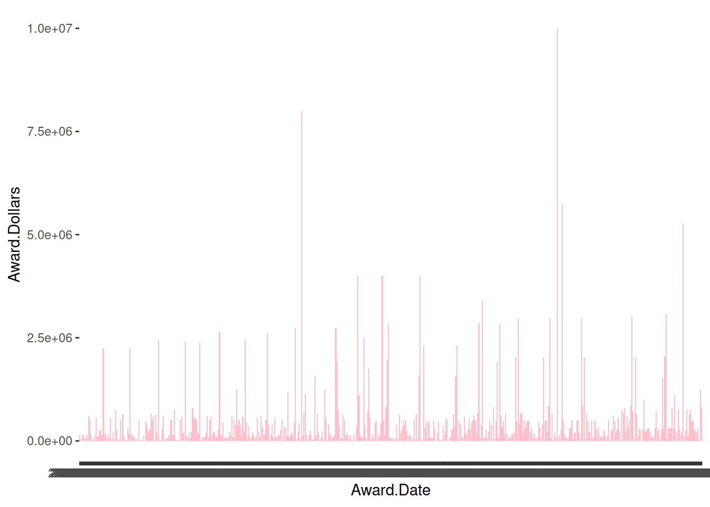

Code
library(tidyverse)
library(readxl)Comparing University of Idaho grants to similar schools
Robyn Steveley
March 14, 2024
This post compares the University of Idaho grant awards from the department of agriculture (USDA), the department of energy (DOE), the national institute of health (NIH), and the national science foundation (NSF) to other similar universities.
Department of Agriculture (USDA)
Department of Energy (DOE)
National Institutes of Health (NIH)
National Science Foundation (NSF)
The setup
The USDA awards for University of Idaho
Award.Date Grant.Number Proposal.Number
1 2010-09-30 2010-48679-01200 N/A
2 2009-09-30 2009-48679-01200 N/A
3 2008-09-30 2008-48679-01200 N/A
4 2003-09-30 2003-48604-01200 N/A
5 2010-09-30 2010-48024-01200 N/A
6 2009-09-30 2009-48024-01200 N/A
7 2008-09-30 2008-48024-01200 N/A
8 2007-09-30 2007-48024-01200 N/A
9 2006-09-30 2006-48024-01200 N/A
10 2005-09-30 2005-48024-01200 N/A
11 2004-09-30 2004-48024-01200 N/A
12 2003-09-30 2003-48024-01200 N/A
13 2002-09-30 2002-48024-01200 N/A
14 2024-02-16 NI24RREAFXXXG033 N/A
15 2022-11-22 NI23RREAFXXXG055 N/A
16 2021-12-02 NI22RREAFXXXG008 N/A
17 2020-12-22 NI21RREAFXXXG017 N/A
18 2020-05-18 NI20RREAFXXXG069 N/A
19 2019-02-19 NI19RREAFXXXG028 N/A
20 2018-02-12 NI18RREAFXXXG014 N/A
21 2017-06-05 NI17RREAFXXXG018 N/A
22 2010-09-30 2010-46000-01200 N/A
23 2009-09-30 2009-46000-01200 N/A
24 2008-09-30 2008-46000-01200 N/A
25 2007-09-30 2007-46000-01200 N/A
26 2006-09-30 2006-46000-01200 N/A
27 2005-09-30 2005-46000-01200 N/A
28 2004-09-30 2004-46000-01200 N/A
29 2003-09-30 2003-46000-01200 N/A
30 2002-09-30 2002-46000-01200 N/A
31 2004-09-30 2004-41540-01200 N/A
32 2003-09-30 2003-41540-01200 N/A
33 2002-09-30 2002-41540-01200 N/A
34 2008-09-30 2008-41531-01200 N/A
35 2007-09-30 2007-41531-01200 N/A
36 2006-09-30 2006-41531-01200 N/A
37 2005-09-30 2005-41531-01200 N/A
38 2004-09-30 2004-41531-01200 N/A
39 2003-09-30 2003-41531-01200 N/A
40 2002-09-30 2002-41531-01200 N/A
41 2024-02-21 NI24EFNEPXXXG059 N/A
42 2022-11-22 NI23EFNEPXXXG064 N/A
43 2021-11-22 NI22EFNEPXXXG062 N/A
44 2020-12-09 NI21EFNEPXXXG025 N/A
45 2020-04-07 NI20EFNEPXXXG008 N/A
46 2019-03-05 NI19EFNEPXXXG049 N/A
47 2018-01-17 NI18EFNEPXXXG021 N/A
48 2017-06-16 NI17EFNEPXXXG022 N/A
49 2010-09-30 2010-41510-01200 N/A
50 2009-09-30 2009-41510-01200 N/A
51 2008-09-30 2008-41510-01200 N/A
52 2007-09-30 2007-41510-01200 N/A
53 2006-09-30 2006-41510-01200 N/A
54 2005-09-30 2005-41510-01200 N/A
55 2004-09-30 2004-41510-01200 N/A
56 2003-09-30 2003-41510-01200 N/A
57 2002-09-30 2002-41510-01200 N/A
58 2003-09-30 2003-41400-01200 N/A
59 2002-09-30 2002-41400-01200 N/A
60 2010-09-30 2010-41310-01200 N/A
61 2009-09-30 2009-41310-01200 N/A
62 2008-09-30 2008-41310-01200 N/A
63 2007-09-30 2007-41310-01200 N/A
64 2006-09-30 2006-41310-01200 N/A
65 2005-09-30 2005-41310-01200 N/A
66 2004-09-30 2004-41310-01200 N/A
67 2003-09-30 2003-41310-01200 N/A
68 2002-09-30 2002-41310-01200 N/A
69 2010-09-30 2010-41300-01200 N/A
70 2009-09-30 2009-41300-01200 N/A
71 2008-09-30 2008-41300-01200 N/A
72 2007-09-30 2007-41300-01200 N/A
73 2006-09-30 2006-41300-01200 N/A
74 2005-09-30 2005-41300-01200 N/A
75 2004-09-30 2004-41300-01200 N/A
76 2003-09-30 2003-41300-01200 N/A
77 2002-09-30 2002-41300-01200 N/A
78 2024-02-20 NI24SLSNXXXXG005 N/A
79 2022-11-23 NI23SLSNXXXXG013 N/A
80 2021-11-22 NI22SLSNXXXXG013 N/A
81 2020-12-08 NI21SLSNXXXXG008 N/A
82 2020-04-30 NI20SLSNXXXXG011 N/A
83 2019-02-19 NI19SLSNXXXXG016 N/A
84 2018-03-15 NI18SLSNXXXXG011 N/A
85 2017-06-02 NI17SLSNXXXXG011 N/A
86 2010-09-30 2010-41200-01200 N/A
87 2009-09-30 2009-41200-01200 N/A
88 2008-09-30 2008-41200-01200 N/A
89 2007-09-30 2007-41200-01200 N/A
90 2006-09-30 2006-41200-01200 N/A
91 2005-09-30 2005-41200-01200 N/A
92 2004-09-30 2004-41200-01200 N/A
93 2003-09-30 2003-41200-01200 N/A
94 2002-09-30 2002-41200-01200 N/A
95 2024-02-20 NI24SLBCXXXXG014 N/A
96 2022-11-23 NI23SLBCXXXXG039 N/A
97 2021-11-26 NI22SLBCXXXXG023 N/A
98 2020-12-09 NI21SLBCXXXXG002 N/A
99 2020-05-14 NI20SLBCXXXXG029 N/A
100 2019-02-19 NI19SLBCXXXXG032 N/A
101 2018-03-16 NI18SLBCXXXXG011 N/A
102 2017-06-02 NI17SLBCXXXXG044 N/A
103 2010-09-30 2010-41100-01200 N/A
104 2009-09-30 2009-41100-01200 N/A
105 2008-09-30 2008-41100-01200 N/A
106 2007-09-30 2007-41100-01200 N/A
107 2006-09-30 2006-41100-01200 N/A
108 2005-09-30 2005-41100-01200 N/A
109 2004-09-30 2004-41100-01200 N/A
110 2003-09-30 2003-41100-01200 N/A
111 2002-09-30 2002-41100-01200 N/A
112 2024-02-20 NI24AHDRXXXXG001 N/A
113 2022-11-25 NI23AHDRXXXXG013 N/A
114 2021-12-06 NI22AHDRXXXXG045 N/A
115 2021-04-08 NI21AHDRXXXXG027 N/A
116 2020-09-03 NI20AHDRXXXXG056 N/A
117 2019-08-12 NI19AHDRXXXXG012 N/A
118 2018-09-05 NI18AHDRXXXXG005 N/A
119 2017-09-13 NI17AHDRXXXXG059 N/A
120 2010-09-30 2010-36100-06016 N/A
121 2009-09-30 2009-36100-06016 N/A
122 2008-09-30 2008-36100-06016 N/A
123 2007-09-30 2007-36100-06016 N/A
124 2006-09-30 2006-36100-06016 N/A
125 2005-09-30 2005-36100-06016 N/A
126 2004-09-30 2004-36100-06016 N/A
127 2003-09-30 2003-36100-06016 N/A
128 2002-09-30 2002-36100-06016 N/A
129 2024-02-13 NI24MSCFRXXXG032 N/A
130 2022-11-23 NI23MSCFRXXXG046 N/A
131 2021-12-01 NI22MSCFRXXXG041 N/A
132 2020-12-28 NI21MSCFRXXXG050 N/A
133 2020-05-21 NI20MSCFRXXXG031 N/A
134 2019-03-07 NI19MSCFRXXXG028 N/A
135 2018-04-02 NI18MSCFRXXXG062 N/A
136 2017-03-27 NI17MSCFRXXXG008 N/A
137 2010-09-30 2010-32100-06016 N/A
138 2009-09-30 2009-32100-06016 N/A
139 2008-09-30 2008-32100-06016 N/A
140 2007-09-30 2007-32100-06016 N/A
141 2006-09-30 2006-32100-06016 N/A
142 2005-09-30 2005-32100-06016 N/A
143 2004-09-30 2004-32100-06016 N/A
144 2003-09-30 2003-32100-06016 N/A
145 2002-09-30 2002-32100-06016 N/A
146 2024-02-20 NI24HMFPXXXXG017 N/A
147 2022-11-23 NI23HMFPXXXXG053 N/A
148 2021-11-22 NI22HMFPXXXXG017 N/A
149 2020-12-10 NI21HMFPXXXXG033 N/A
150 2020-05-13 NI20HMFPXXXXG031 N/A
151 2019-02-19 NI19HMFPXXXXG056 N/A
152 2018-02-01 NI18HMFPXXXXG028 N/A
153 2017-06-02 NI17HMFPXXXXG035 N/A
154 2010-09-30 2010-31200-06016 N/A
155 2009-09-30 2009-31200-06016 N/A
156 2008-09-30 2008-31200-06016 N/A
157 2007-09-30 2007-31200-06016 N/A
158 2006-09-30 2006-31200-06016 N/A
159 2005-09-30 2005-31200-06016 N/A
160 2004-09-30 2004-31200-06016 N/A
161 2003-09-30 2003-31200-06016 N/A
162 2002-09-30 2002-31200-06016 N/A
163 2024-02-21 NI24HFPXXXXXG005 N/A
164 2022-11-22 NI23HFPXXXXXG047 N/A
165 2021-12-06 NI22HFPXXXXXG031 N/A
166 2020-12-16 NI21HFPXXXXXG041 N/A
167 2020-04-22 NI20HFPXXXXXG030 N/A
168 2019-02-07 NI19HFPXXXXXG020 N/A
169 2018-03-01 NI18HFPXXXXXG032 N/A
170 2017-06-02 NI17HFPXXXXXG031 N/A
171 2010-09-30 2010-31100-06016 N/A
172 2009-09-30 2009-31100-06016 N/A
173 2008-09-30 2008-31100-06016 N/A
174 2007-09-30 2007-31100-06016 N/A
175 2006-09-30 2006-31100-06016 N/A
176 2005-09-30 2005-31100-06016 N/A
177 2004-09-30 2004-31100-06016 N/A
178 2003-09-30 2003-31100-06016 N/A
179 2002-09-30 2002-31100-06016 N/A
180 2001-11-05 2002-35208-11552 2001-00664
181 2001-12-18 2002-35311-11654 2001-00770
182 2001-10-16 2001-35107-11008 2001-01203
183 2001-11-15 2002-35400-11693 2001-01796
184 2001-12-18 2002-35206-11666 2001-03316
185 2002-03-22 2002-41580-01325 2002-00472
186 2002-04-04 2002-41580-01336 2002-00488
187 2002-06-26 2002-35100-12076 2002-00904
188 2002-05-02 2001-41520-01126 2002-00961
189 2002-08-08 2002-35102-12470 2002-01019
190 2002-07-01 2002-35301-12103 2002-01425
191 2002-08-19 2002-35503-12546 2002-01570
192 2002-07-11 2001-34141-10916 2002-02292
193 2002-07-12 2002-38411-12105 2002-03100
194 2002-09-20 2002-39454-12622 2002-03303
195 2002-11-13 2003-35206-12880 2002-03683
196 2002-11-14 2003-35103-12902 2002-03732
197 2002-06-17 2002-34103-12125 2002-04088
198 2002-06-13 2002-34158-12024 2002-04207
199 2002-06-29 2002-41520-01439 2002-04385
200 2002-09-10 2002-34239-12743 2002-06056
201 2002-06-06 2002-34479-12025 2002-06107
202 2003-07-21 2003-35102-13675 2003-01264
203 2003-06-20 2003-35302-13354 2003-01445
204 2003-07-24 2003-35503-13697 2003-01494
205 2003-08-21 2003-35503-13963 2003-01495
206 2003-10-29 2004-35503-14128 2003-01730
207 2003-07-30 2003-35103-13734 2003-02255
208 2003-07-14 2003-35203-13602 2003-02775
209 2003-11-07 2004-35400-14139 2003-02918
210 2003-04-24 2001-41520-01126 2003-03143
211 2003-05-20 2001-34141-10916 2003-03188
212 2003-04-23 2002-41580-01336 2003-03219
213 2003-08-06 2003-35206-13617 2003-03256
214 2003-07-28 2003-35206-13669 2003-03296
215 2003-04-28 2002-41580-01325 2003-03474
216 2003-07-30 2003-34158-13609 2003-04423
217 2003-05-21 2003-38859-01593 2003-04753
218 2003-09-05 2003-41210-01752 2003-05030
219 2003-09-11 2003-41210-01784 2003-05049
220 2003-08-12 00-51130-9726 2003-05065
221 2003-09-29 2003-45300-01809 2003-05441
222 2003-09-22 2003-34239-14085 2003-06036
223 2003-07-16 2003-34479-13500 2003-06087
224 2004-05-13 2001-38413-10233 2004-00590
225 2004-06-04 2001-38413-10233 2004-00592
226 2004-07-01 2001-38413-10233 2004-00593
227 2004-03-26 2001-41520-01126 2004-00655
228 2004-05-20 2004-34141-14468 2004-00806
229 2004-04-22 2002-41580-01325 2004-01328
230 2004-04-23 2002-41580-01336 2004-01341
231 2004-07-19 2004-35100-14870 2004-02101
232 2005-01-03 2005-35503-15385 2004-02272
233 2004-07-22 2004-38411-14731 2004-02743
234 2004-08-03 2004-38411-14743 2004-02760
235 2004-07-27 2004-35107-14891 2004-03130
236 2004-11-04 2005-35103-15243 2004-03713
237 2004-12-15 2005-35101-15348 2004-04114
238 2004-11-17 2005-35206-15295 2004-04344
239 2004-12-09 2005-35201-15353 2004-04562
240 2004-09-02 2004-51130-02245 2004-04635
241 2004-06-22 2004-37610-14546 2004-04842
242 2004-07-09 2004-35107-14724 2004-05360
243 2004-07-21 2004-38857-03035 2004-05589
244 2004-09-16 2004-48619-03119 2004-05654
245 2004-09-14 2004-41541-03100 2004-05705
246 2004-09-23 2003-45300-01809 2004-05740
247 2004-08-26 2004-34239-15081 2004-06043
248 2004-08-25 2004-34479-15099 2004-06104
249 2004-07-21 2004-34158-14707 2004-06323
250 2005-04-27 2004-34141-14468 2005-01045
251 2005-01-06 2005-48621-03142 2005-01048
252 2005-07-29 2005-35503-16218 2005-01320
253 2005-10-31 2006-35203-16573 2005-01500
254 2005-06-16 2005-35400-15840 2005-01755
255 2005-04-08 2001-41520-01126 2005-01846
256 2005-03-18 2002-41580-01325 2005-02169
257 2005-03-16 2002-41580-01336 2005-02170
258 2005-07-13 2005-35504-16083 2005-02566
259 2005-07-18 2005-35107-16171 2005-03126
260 2005-06-27 2005-38411-15853 2005-03270
261 2006-04-27 2006-35206-16819 2005-04568
262 2005-08-29 2004-51130-02245 2005-04690
263 2005-08-10 2005-38836-02342 2005-04722
264 2005-11-04 2006-38413-16606 2005-04749
265 2005-09-15 2003-45300-01809 2005-05228
266 2005-06-16 2005-34239-15729 2005-06043
267 2005-07-06 2005-34479-16054 2005-06102
268 2005-08-25 2005-34158-16418 2005-06311
269 2005-09-07 2005-38624-16503 2005-06315
270 2006-04-14 2006-41580-03442 2006-01210
271 2006-04-27 2006-41580-03426 2006-01217
272 2006-04-13 2006-41590-03435 2006-01991
273 2006-12-07 2007-35206-17842 2006-04369
274 2006-08-16 2004-51130-02245 2006-04522
275 2006-08-02 2003-45300-01809 2006-04765
276 2006-09-19 2006-35102-17689 2006-04881
277 2006-08-02 2006-34239-17200 2006-06055
278 2006-06-08 2006-34479-17058 2006-06122
279 2006-09-28 2006-38624-17711 2006-06316
280 2006-08-31 2006-34158-17640 2006-06325
281 2007-04-27 2007-41520-03777 2007-01176
282 2007-05-02 2006-41590-03435 2007-01263
283 2007-11-09 2008-35319-18676 2007-01505
284 2007-06-22 2007-51110-03820 2007-01886
285 2007-07-27 2007-35503-18456 2007-02583
286 2007-04-10 2006-41580-03426 2007-02883
287 2007-04-17 2006-41580-03442 2007-02886
288 2007-08-10 2007-33522-18565 2007-03044
289 2007-07-12 2007-41580-03856 2007-03258
290 2007-08-09 2007-34103-18495 2007-03623
291 2007-09-13 2007-38624-18600 2007-04136
292 2007-09-27 2007-51130-03992 2007-04161
293 2008-01-22 2008-55206-18812 2007-04220
294 2007-07-31 2004-51130-02245 2007-04707
295 2007-12-18 2008-38413-18755 2007-04781
296 2007-09-24 2007-41530-03965 2007-04942
297 2007-08-30 2003-45300-01809 2007-04958
298 2007-09-27 2007-51130-03992 2007-05097
299 2008-01-29 2006-35203-18819 2008-00505
300 2008-07-16 2008-35203-04505 2008-00571
301 2008-04-24 2007-41520-03777 2008-00593
302 2008-08-06 2008-35204-04582 2008-00892
303 2008-03-20 2006-41580-03426 2008-01163
304 2008-03-13 2007-41580-03856 2008-01164
305 2008-03-05 2006-41580-03442 2008-01172
306 2008-07-30 2008-35102-04635 2008-01784
307 2008-04-14 2006-41590-03435 2008-01813
308 2008-12-17 2009-35503-05207 2008-02212
309 2008-07-31 2008-51101-04522 2008-02922
310 2008-07-23 2008-55320-04560 2008-02991
311 2008-07-23 2008-34621-19409 2008-03326
312 2008-06-16 2008-34479-19150 2008-03492
313 2008-08-18 2008-34158-19486 2008-03513
314 2008-08-22 2008-34239-19446 2008-03522
315 2008-09-11 2008-51130-04734 2008-03545
316 2008-09-10 2008-38624-19516 2008-04095
317 2008-12-09 2009-35600-05025 2008-04738
318 2008-09-17 2008-45300-04843 2008-04749
319 2009-07-02 2009-38414-19710 2009-00505
320 2009-06-09 2007-41520-03777 2009-00568
321 2009-04-07 2009-41580-05321 2009-00649
322 2009-03-25 2009-41580-05318 2009-00651
323 2009-07-22 2009-41534-05541 2009-00656
324 2009-02-25 2009-10003-05142 2009-00776
325 2009-05-06 2006-41590-03435 2009-01106
326 2009-12-15 2010-65119-20410 2009-01727
327 2009-08-17 2009-34103-19906 2009-02037
328 2009-07-15 2009-34103-19838 2009-02038
329 2009-12-18 2010-65114-20516 2009-02272
330 2009-08-17 2009-65503-05738 2009-02381
331 2009-08-27 2009-65104-05730 2009-02604
332 2009-12-22 2010-85208-20388 2009-03111
333 2009-08-06 2009-34239-19898 2009-03436
334 2009-07-22 2009-34479-19833 2009-03530
335 2009-08-20 2008-51130-04734 2009-03542
336 2009-09-25 2009-34158-20170 2009-03998
337 2009-11-30 2010-65400-20431 2009-04135
338 2009-08-20 2009-34621-20113 2009-04152
339 2009-09-10 2009-38624-20121 2009-04183
340 2009-08-17 2007-41580-03856 2009-04239
341 2009-12-22 2010-65108-20519 2009-04401
342 2009-09-17 2007-51130-03992 2009-04951
343 2010-05-20 2010-65206-20792 2009-05554
344 2009-09-30 2008-45300-04843 2009-05844
345 2010-04-14 2010-41520-20724 2010-00668
346 2010-04-20 2007-41520-03777 2010-00787
347 2010-03-23 2010-34479-20715 2010-01230
348 2010-03-09 2009-41580-05318 2010-01362
349 2010-08-31 2007-41580-03856 2010-01363
350 2010-03-31 2009-41580-05321 2010-01364
351 2010-09-17 2010-41534-21645 2010-01568
352 2010-07-22 2010-34621-21170 2010-01584
353 2010-06-16 2010-38506-21045 2010-01622
354 2010-09-29 2010-38411-21370 2010-01828
355 2010-08-04 2010-51300-21285 2010-01943
356 2010-06-17 2010-34158-20938 2010-02032
357 2010-07-15 2010-34239-21086 2010-02547
358 2010-07-12 2010-41530-21203 2010-02958
359 2010-09-09 2010-38624-21743 2010-03269
360 2011-01-14 2011-38420-20088 2010-03328
361 2010-08-25 2008-51130-04734 2010-03604
362 2010-12-06 2011-67009-20094 2010-04027
363 2011-02-14 2011-68002-30191 2010-04401
364 2011-01-25 2011-67024-30075 2010-04759
365 2010-09-16 2008-45300-04843 2010-04859
366 2011-03-02 2011-41510-01200 2011-00895
367 2011-02-28 2011-41100-01200 2011-01149
368 2011-04-20 2007-41520-03777 2011-01195
369 2011-03-31 2010-41520-20724 2011-01203
370 2011-02-25 2011-31100-06016 2011-01253
371 2011-02-17 2011-31200-06016 2011-01314
372 2011-02-10 2011-41200-01200 2011-01451
373 2011-05-19 2011-36100-06016 2011-01725
374 2011-03-24 2011-46000-01200 2011-01738
375 2011-04-14 2011-32100-06016 2011-01939
376 2011-09-06 2009-41580-05318 2011-02023
377 2011-08-24 2009-41580-05321 2011-02086
378 2011-09-14 2011-41580-31053 2011-02633
379 2011-09-06 2011-38624-30824 2011-03809
380 2012-04-19 2012-67013-19414 2011-04350
381 2011-09-22 2011-67009-20094 2011-04452
382 2011-08-25 2010-41534-21645 2011-04864
383 2011-08-25 2011-41200-01200 2011-05238
384 2011-08-24 2011-41100-01200 2011-05316
385 2011-09-13 2011-41300-01200 2011-05379
386 2011-08-19 2011-41310-01200 2011-05403
387 2011-09-15 2011-41510-01200 2011-05443
388 2011-09-21 2011-31100-06016 2011-05485
389 2011-09-06 2011-31200-06016 2011-05531
390 2011-09-09 2008-45300-04843 2011-05569
391 2011-09-17 2011-36100-06016 2011-05622
392 2011-09-21 2011-46000-01200 2011-05743
393 2011-09-24 2011-48679-31096 2011-05777
394 2011-09-28 2011-32100-06016 2011-06233
395 2012-04-04 2012-38413-19430 2011-06276
396 2012-11-30 2013-67010-20399 2012-00948
397 2012-07-18 2012-67009-19612 2012-00951
398 2012-08-06 2012-69002-19869 2012-00967
399 2012-08-07 2012-38414-19558 2012-01150
400 2012-07-19 2012-67012-19720 2012-01265
401 2012-04-17 2009-41580-05318 2012-01455
402 2012-04-12 2011-41580-31053 2012-01462
403 2012-04-19 2009-41580-05321 2012-01463
404 2012-03-29 2010-41520-20724 2012-01707
405 2012-09-10 2012-38624-20170 2012-02719
406 2012-04-27 2012-41100-01200 2012-02720
407 2012-05-11 2012-31200-06016 2012-02801
408 2012-05-09 2012-31100-06016 2012-02826
409 2012-05-31 2012-41510-01200 2012-02833
410 2012-06-21 2012-41200-01200 2012-02929
411 2012-06-27 2012-36100-06016 2012-03070
412 2012-06-21 2012-46000-01200 2012-03152
413 2012-07-16 2012-32100-06016 2012-03227
414 2012-07-27 2008-45300-04843 2012-03328
415 2012-09-24 2012-48679-20199 2012-03495
416 2012-08-08 2010-41534-21645 2012-03575
417 2012-08-23 2012-41300-01200 2012-03834
418 2012-08-24 2012-41310-01200 2012-03879
419 2012-12-17 2011-68002-30191 2012-04180
420 2013-09-25 2013-68003-21279 2012-04292
421 2013-05-30 2011-67005-20676 2012-04473
422 2013-06-24 2013-41580-20799 2013-01460
423 2013-06-25 2013-41580-20800 2013-01475
424 2013-06-20 2013-41580-20801 2013-01476
425 2013-06-20 2010-41520-20724 2013-01503
426 2013-09-12 2013-67013-21349 2013-02349
427 2013-09-11 2013-67019-21375 2013-02791
428 2013-09-19 2013-67020-21352 2013-02816
429 2013-09-03 2013-67012-21146 2013-03436
430 2013-09-20 2013-41534-21508 2013-04132
431 2013-09-09 2013-51102-21015 2013-04495
432 2013-07-11 2013-41510-01200 2013-04597
433 2013-07-30 2013-31200-06016 2013-04647
434 2013-07-10 2013-41100-01200 2013-04726
435 2014-03-26 2014-68006-21866 2013-04787
436 2013-07-25 2013-46000-01200 2013-04897
437 2013-08-05 2013-31100-06016 2013-05066
438 2013-09-19 2013-38624-21400 2013-05092
439 2013-08-16 2013-32100-06016 2013-05404
440 2013-09-04 2013-41200-01200 2013-05489
441 2013-09-12 2013-41310-01200 2013-05576
442 2013-08-29 2013-36100-06016 2013-05837
443 2014-01-08 2011-68002-30191 2013-07110
444 2014-06-12 2014-31100-06016 2014-01812
445 2014-05-13 2010-41520-20724 2014-02462
446 2014-05-16 2014-31200-06016 2014-02506
447 2014-07-09 2014-41100-01200 2014-02524
448 2014-09-14 2014-67014-22408 2014-04308
449 2015-03-10 2015-67016-23307 2014-05003
450 2015-01-15 2015-68006-22840 2014-05615
451 2014-07-12 2014-46000-01200 2014-05647
452 2015-01-16 2015-67018-23069 2014-06074
453 2014-07-22 2013-41580-20799 2014-06207
454 2014-07-10 2013-41580-20801 2014-06471
455 2014-07-11 2013-41580-20800 2014-06475
456 2014-07-21 2014-41310-01200 2014-06705
457 2014-07-16 2014-41200-01200 2014-07106
458 2015-06-10 2015-69004-23634 2014-07639
459 2014-09-11 2014-70006-22497 2014-07649
460 2014-08-18 2014-32100-06016 2014-07832
461 2014-09-08 2014-45300-22312 2014-07957
462 2014-08-05 2014-41510-01200 2014-07975
463 2014-08-12 2014-36100-06016 2014-08528
464 2015-02-11 2015-46000-01200 2015-00229
465 2015-01-29 2015-32100-06016 2015-00264
466 2015-02-13 2015-41510-01200 2015-00439
467 2015-01-27 2015-41310-01200 2015-01115
468 2015-01-14 2015-31100-06016 2015-01304
469 2015-02-10 2015-31200-06016 2015-01422
470 2015-02-18 2015-41100-01200 2015-01792
471 2015-01-27 2015-41200-01200 2015-01877
472 2015-04-02 2011-68002-30191 2015-02327
473 2015-06-22 2013-41580-20799 2015-03391
474 2015-06-23 2013-41580-20800 2015-03401
475 2015-06-30 2013-41580-20801 2015-03402
476 2015-03-31 2015-31100-06016 2015-03776
477 2015-04-17 2015-41100-01200 2015-03835
478 2015-03-26 2015-31200-06016 2015-03895
479 2015-04-09 2015-41310-01200 2015-03996
480 2015-04-06 2015-41200-01200 2015-04044
481 2015-03-30 2015-46000-01200 2015-04091
482 2015-04-24 2015-41510-01200 2015-04233
483 2015-04-29 2015-32100-06016 2015-04243
484 2015-08-27 2015-70017-23932 2015-04755
485 2015-10-26 2016-67017-24418 2015-05677
486 2015-12-15 2016-67018-24715 2015-05972
487 2015-11-25 2016-67018-24593 2015-05973
488 2015-09-17 2015-38624-24298 2015-06584
489 2015-06-01 2015-36100-06016 2015-07270
490 2016-02-12 2016-69006-24831 2015-07561
491 2016-05-31 2016-67020-25320 2015-08661
492 2016-03-03 2016-67032-25012 2015-09686
493 2015-09-17 2014-45300-22312 2015-09756
494 2015-09-09 2014-70006-22497 2015-09793
495 2015-09-16 2015-36100-06016 2015-11239
496 2016-02-12 2016-46000-01200 2016-00069
497 2016-02-24 2016-41510-01200 2016-00176
498 2016-02-04 2016-31200-06016 2016-00218
499 2016-02-09 2016-41100-01200 2016-00415
500 2016-01-08 2016-41200-01200 2016-00463
501 2016-03-02 2016-32100-06016 2016-00572
502 2016-01-13 2016-31100-06016 2016-01131
503 2016-02-18 2016-41310-01200 2016-01231
504 2016-06-22 2013-41580-20800 2016-04233
505 2016-06-22 2013-41580-20801 2016-04274
506 2016-07-28 2013-41580-20799 2016-04275
507 2016-05-14 2016-41310-01200 2016-05223
508 2016-08-11 2015-69004-23634 2016-05240
509 2016-05-14 2016-41100-01200 2016-05344
510 2016-05-14 2016-41200-01200 2016-05394
511 2016-04-28 2016-41510-01200 2016-05443
512 2016-05-10 2016-31100-06016 2016-05452
513 2016-04-20 2016-31200-06016 2016-05526
514 2016-05-16 2016-46000-01200 2016-05641
515 2016-05-18 2016-32100-06016 2016-05832
516 2016-08-15 2015-38624-24298 2016-06057
517 2016-09-14 2014-70006-22497 2016-07108
518 2016-09-16 2016-70020-25804 2016-07428
519 2016-08-18 2014-45300-22312 2016-07498
520 2017-05-09 2017-67014-26591 2016-09301
521 2016-12-14 2017-67004-26131 2016-09857
522 2017-03-21 2017-67016-26301 2016-10149
523 2017-02-21 2017-67014-26197 2016-10554
524 2016-09-16 2016-36100-06016 2016-10691
525 2017-04-25 2017-68006-26228 2016-10945
526 2017-06-20 2017-68002-26819 2016-11575
527 2017-08-08 2017-38414-26960 2017-03762
528 2017-09-06 2017-38414-27118 2017-03773
529 2017-05-18 2015-69004-23634 2017-04048
530 2017-09-13 2015-38624-24298 2017-04091
531 2017-09-12 2017-41580-26935 2017-04162
532 2017-08-08 2017-41580-26922 2017-04192
533 2017-08-17 2017-41580-26930 2017-04227
534 2017-09-18 2017-51102-27271 2017-04279
535 2017-09-13 2017-70006-27176 2017-04433
536 2017-09-18 2014-45300-22312 2017-04766
537 2018-06-07 2018-67016-28310 2017-05751
538 2018-02-21 2018-67017-27630 2017-06764
539 2018-04-13 2018-67022-27894 2017-06804
540 2018-01-18 2018-67018-27514 2017-06982
541 2018-05-04 2018-68006-28102 2017-08297
542 2018-07-29 2016-67012-28381 2017-09328
543 2018-09-06 2018-41520-28749 2018-03750
544 2018-09-14 2015-38624-24298 2018-03973
545 2018-06-19 2015-69004-23634 2018-04284
546 2019-03-11 2015-69004-23634 2018-05390
547 2018-07-23 2017-70006-27176 2018-05593
548 2018-08-27 2017-41580-26922 2018-05675
549 2018-08-27 2017-41580-26935 2018-05676
550 2018-09-05 2017-41580-26930 2018-05677
551 2020-04-30 2020-67020-31340 2018-06883
552 2019-05-03 2019-68006-29638 2018-06955
553 2019-02-12 2019-67014-29109 2018-07378
554 2019-05-01 2019-67018-29592 2018-07505
555 2019-05-09 2019-67018-29688 2018-07508
556 2018-09-12 2014-45300-22312 2018-07525
557 2019-07-03 2019-67021-29942 2018-08165
558 2019-05-17 2019-67012-29721 2018-08177
559 2019-07-02 2019-68006-29325 2018-08367
560 2019-05-17 2019-67023-29636 2018-08698
561 2019-06-18 2019-38504-29891 2019-02646
562 2019-08-27 2019-41520-30040 2019-02753
563 2019-07-17 2018-41520-28749 2019-03503
564 2019-08-29 2019-49400-30034 2019-03655
565 2019-09-03 2017-41580-26922 2019-03912
566 2019-07-31 2017-41580-26930 2019-03913
567 2019-08-21 2017-41580-26935 2019-03914
568 2019-08-29 2019-38624-30312 2019-04158
569 2019-08-30 2019-70020-30345 2019-04224
570 2019-08-01 2017-70006-27176 2019-04270
571 2020-05-06 2020-67016-31542 2019-05914
572 2020-06-01 2020-67022-31699 2019-06440
573 2020-04-29 2020-67020-31174 2019-06529
574 2020-04-30 2020-67022-31374 2019-07036
575 2020-04-22 2020-68008-31404 2019-07053
576 2020-06-11 2020-67034-31888 2019-07120
577 2020-06-03 2020-67012-31782 2019-07219
578 2020-09-23 2020-67023-33261 2019-07794
579 2020-06-09 2020-69012-31871 2019-08306
580 2020-05-22 2020-67023-31679 2020-02010
581 2020-07-22 2020-51106-32358 2020-02368
582 2020-10-23 2021-67016-33390 2020-02685
583 2020-11-18 2021-67016-33718 2020-02690
584 2020-07-13 2020-51181-32136 2020-02807
585 2020-11-04 2021-67016-33416 2020-02844
586 2020-08-07 2017-41580-26922 2020-03086
587 2020-08-06 2017-41580-26930 2020-03092
588 2020-08-04 2017-41580-26935 2020-03142
589 2021-01-13 2021-68006-34028 2020-04601
590 2020-07-01 2019-41520-30040 2020-04771
591 2020-07-09 2018-41520-28749 2020-04773
592 2020-11-12 2021-67020-33419 2020-04998
593 2020-07-29 2017-70006-27176 2020-06176
594 2021-02-26 2021-67023-34476 2020-06231
595 2020-08-22 2020-70411-32777 2020-07139
596 2020-08-27 2020-51102-32921 2020-07283
597 2020-08-25 2020-70006-32980 2020-07400
598 2020-08-25 2020-38624-32470 2020-08059
599 2021-04-22 2021-67022-34834 2020-08740
600 2021-07-20 2021-67022-35504 2020-08768
601 2021-02-19 2021-67021-34414 2020-08799
602 2021-01-25 2021-67021-34204 2020-08806
603 2021-01-29 2021-67021-34253 2020-08861
604 2021-02-08 2021-67021-34255 2020-08868
605 2021-03-25 2021-67038-34629 2020-09329
606 2021-03-29 2021-69018-34639 2020-09441
607 2021-05-21 2021-67034-35046 2020-09963
608 2021-05-18 2021-67034-34997 2020-10162
609 2021-05-27 2021-67034-35181 2020-10815
610 2021-06-10 2021-67034-35156 2020-10917
611 2021-05-21 2021-38420-34937 2021-03631
612 2021-05-20 2018-41520-28749 2021-03747
613 2021-06-25 2021-38414-34960 2021-03774
614 2021-04-23 2019-41520-30040 2021-03975
615 2021-07-29 2021-41520-35353 2021-04152
616 2021-06-02 2021-51102-35189 2021-04365
617 2021-05-12 2017-41580-26922 2021-04410
618 2021-05-24 2017-41580-26930 2021-04418
619 2021-06-14 2021-70411-35212 2021-04752
620 2021-07-12 2021-51106-35491 2021-04806
621 2021-07-29 2021-70006-35310 2021-04891
622 2021-08-03 2021-70006-35386 2021-05152
623 2021-08-05 2021-38624-35751 2021-05511
624 2021-08-05 2021-70020-35754 2021-05650
625 2021-05-12 2017-41580-26935 2021-05905
626 2021-11-09 2022-67016-36314 2021-07209
627 2022-03-10 2022-67014-37036 2021-07512
628 2021-10-27 2022-67014-36211 2021-07602
629 2021-11-08 2022-67017-36315 2021-08178
630 2022-05-06 2022-67012-37396 2021-08370
631 2021-10-15 2022-67013-36138 2021-08446
632 2021-11-02 2022-67013-36270 2021-08460
633 2021-12-13 2022-67022-36600 2021-08554
634 2021-11-17 2022-68018-36258 2021-08927
635 2021-10-12 2022-67020-36110 2021-09118
636 2022-03-18 2022-67018-37100 2021-09340
637 2021-12-23 2022-67011-36633 2021-09423
638 2022-03-28 2022-67020-37131 2021-09754
639 2021-12-13 2022-68006-36434 2021-10052
640 2022-06-15 2022-67022-37607 2021-10445
641 2022-06-23 2022-67022-37611 2021-10451
642 2021-08-09 2019-49400-30034 2021-10601
643 2022-05-04 2022-68017-37318 2021-10916
644 2021-08-18 2019-41520-30040 2021-10945
645 2021-08-18 2018-41520-28749 2021-10969
646 2022-08-25 2022-67021-37857 2021-11057
647 2021-08-05 2021-38414-34960 2021-11340
648 2022-07-27 2022-41580-37941 2022-03196
649 2022-08-02 2022-41580-37939 2022-03202
650 2022-07-26 2022-41580-37940 2022-03203
651 2022-04-29 2018-41520-28749 2022-03908
652 2022-04-29 2019-41520-30040 2022-03952
653 2022-08-30 2022-70411-38308 2022-04094
654 2022-06-06 2021-70006-35386 2022-04433
655 2022-04-29 2021-41520-35353 2022-04539
656 2022-09-02 2022-51181-38335 2022-05295
657 2022-09-14 2022-51181-38450 2022-05299
658 2022-08-12 2022-70005-38273 2022-05761
659 2022-09-01 2022-70007-38317 2022-05994
660 2022-09-08 2022-70410-38575 2022-06327
661 2022-07-19 2021-38624-35751 2022-06706
662 2023-04-03 2023-67016-39658 2022-08119
663 2023-01-13 2023-67013-39067 2022-08481
664 2022-10-07 2022-68016-38665 2022-08514
665 2023-04-18 2023-69015-39605 2022-08681
666 2023-01-20 2023-67014-39159 2022-08761
667 2023-06-01 2023-68018-40323 2022-09085
668 2023-04-17 2023-67020-39699 2022-09254
669 2023-05-10 2023-67012-40085 2022-09652
670 2023-03-02 2023-69008-39276 2022-10068
671 2023-08-31 2023-67023-40534 2022-10358
672 2023-04-03 2023-67013-39411 2022-10955
673 2023-06-15 2023-67011-40518 2022-11387
674 2023-05-23 2023-67011-40391 2022-11389
675 2023-06-15 2023-67020-40442 2022-12001
676 2023-09-01 2023-67037-41120 2022-12194
677 2023-08-23 2023-69018-41016 2022-12195
678 2023-06-29 2019-41520-30040 2023-04536
679 2023-08-11 2022-41580-37941 2023-04588
680 2023-08-15 2022-41580-37939 2023-04589
681 2023-08-15 2022-41580-37940 2023-04614
682 2023-09-12 2023-49400-40889 2023-04861
683 2023-08-30 2023-70410-41214 2023-05393
684 2023-06-15 2021-41520-35353 2023-05527
685 2023-11-20 2024-38413-41458 2023-05720
686 2023-09-18 2023-70411-41166 2023-05949
687 2023-08-15 2021-70006-35386 2023-06178
688 2023-07-25 2021-38624-35751 2023-06768
689 2023-08-04 2022-51181-38450 2023-06777
690 2023-09-11 2023-77046-41255 2023-07036
691 2024-02-09 2024-67012-41932 2023-09727
Grant.Title
1 N/A
2 N/A
3 N/A
4 N/A
5 N/A
6 N/A
7 N/A
8 N/A
9 N/A
10 N/A
11 N/A
12 N/A
13 N/A
14 N/A
15 N/A
16 N/A
17 N/A
18 N/A
19 N/A
20 N/A
21 N/A
22 N/A
23 N/A
24 N/A
25 N/A
26 N/A
27 N/A
28 N/A
29 N/A
30 N/A
31 N/A
32 N/A
33 N/A
34 N/A
35 N/A
36 N/A
37 N/A
38 N/A
39 N/A
40 N/A
41 N/A
42 N/A
43 N/A
44 N/A
45 N/A
46 N/A
47 N/A
48 N/A
49 N/A
50 N/A
51 N/A
52 N/A
53 N/A
54 N/A
55 N/A
56 N/A
57 N/A
58 N/A
59 N/A
60 N/A
61 N/A
62 N/A
63 N/A
64 N/A
65 N/A
66 N/A
67 N/A
68 N/A
69 N/A
70 N/A
71 N/A
72 N/A
73 N/A
74 N/A
75 N/A
76 N/A
77 N/A
78 N/A
79 N/A
80 N/A
81 N/A
82 N/A
83 N/A
84 N/A
85 N/A
86 N/A
87 N/A
88 N/A
89 N/A
90 N/A
91 N/A
92 N/A
93 N/A
94 N/A
95 N/A
96 N/A
97 N/A
98 N/A
99 N/A
100 N/A
101 N/A
102 N/A
103 N/A
104 N/A
105 N/A
106 N/A
107 N/A
108 N/A
109 N/A
110 N/A
111 N/A
112 N/A
113 N/A
114 N/A
115 N/A
116 N/A
117 N/A
118 N/A
119 N/A
120 N/A
121 N/A
122 N/A
123 N/A
124 N/A
125 N/A
126 N/A
127 N/A
128 N/A
129 N/A
130 N/A
131 N/A
132 N/A
133 N/A
134 N/A
135 N/A
136 N/A
137 N/A
138 N/A
139 N/A
140 N/A
141 N/A
142 N/A
143 N/A
144 N/A
145 N/A
146 N/A
147 N/A
148 N/A
149 N/A
150 N/A
151 N/A
152 N/A
153 N/A
154 N/A
155 N/A
156 N/A
157 N/A
158 N/A
159 N/A
160 N/A
161 N/A
162 N/A
163 N/A
164 N/A
165 N/A
166 N/A
167 N/A
168 N/A
169 N/A
170 N/A
171 N/A
172 N/A
173 N/A
174 N/A
175 N/A
176 N/A
177 N/A
178 N/A
179 N/A
180 Purchase of a Delta + Elemental Mass Spectrometer Interfaced With a Carbon/Nitrogen/Sulfur Analyzer
181 Critical Interference Period of Hairy Nightshade, Solanum sarrachoides, in Potato, Solanum tuberosum
182 Enhancing Establishment and Proliferation of Fungal Soil Inocula
183 Specific Factor, Endogenous Policy Formations, and Free Trade Analysis of Sugar Market
184 Improving the Efficiency of Ruminal Ammonia Nitrogen Utilization for Milk Protein Synthesis and Reducing Nitrogen Losses in Dairy Cows
185 USDA-ES Fort Hall Agricultural Agent
186 USDA-CSREES Coeur d'Alene Reservation Extension Educator
187 Broadening Genetic Base and Development of High Yielding Multiple-Stress Tolerant Common Bean Cultivars
188 Developing Workforce Preparation and Leadership Skills Through Technology
189 Conjunctive In-Season Water and Nitrogen Management for Improved Production
190 Genetic Map of a Hard Winter Wheat Population for Improved Disease Resistance
191 Evaluation of a Low Phytic Acid Gene in Wheat
192 Potato Variety Development and Improvement in the Northwest
193 Practicing Sustainability: An Interdisciplinary Approach to a Capstone Course in Natural Resources
194 Effect of Trophic Complexity on Apparent Fitness of a Recombinant Fungus in Soil
195 Leptin-Insulin Interactions: Improving Production Efficiency in Ruminants
196 Micro-Woodfiber Composites
197 Integrating Biological Control and Prescribed Grazing to Manage Yellow Starthistle on Idaho Rangelands
198 Inland Northwest Forest Products Research Consortium
199 New Communities Projects Orientation
200 Cool Season Food Legume Research Program (CSFLRP)
201 Increasing the Safety and Shelf Life of Agricultural Commodities
202 Impact of Forest Treatments and Climate Change on Hydrologic Regimes
203 Aphid Responses to Volatile Organic Compounds Produced by Virus-Infected Plants
204 Simultaneous Microstructural Calorimetric and Characterization of Food and Biomaterials using Thermal Microscopy
205 A Multiscale Approach Towards Prediction of Stress-Cracking in Corn Kernels
206 Characterization of Wheat Starch A- and B-Type Granule Microstructure and Reactivity Across Normal, Partial Waxy, and Waxy Backgrounds
207 Under the Microscope: Natural Resources Research and Teaching
208 Endocrine Control of Oogenesis in Rainbow Trout
209 US-Canadian Softwood Lumber Trade: A Case of Perfectly Fungible Products
210 Developing Workforce Preparation and Leadership Skills Through Technology
211 Potato Variety Development and Improvement in the Northwest
212 USDA-CSREES-Coeur d'Alene Reservation Extension Educator
213 Equipment Grant: Li-Cor "Odyssey"
214 GC-MS for Multi-Disciplinary Ecological Studies
215 USDA-ES Fort Hall Agricultural Agent
216 Inland Northwest Forest Products Research Consortium
217 NPL Orientation to University Extension Systems
218 Youth Tech Teams Initialize Community Readiness
219 Rangeland, Irrigated Forage, and Urban Water Management During and After a Drought
220 Coordination of Water Quality Extension and Research Programs in the Pacific Northwest
221 National Biodiesel Fuel Education Program
222 FY 2003 Cool Season Food Legume Research Program (CSFLRP)
223 Increasing the Safety and Shelf Life of Agricultural Commodities
224 University of Idaho Multicultural Scholars Experiential Learning Program - Elena de la Concepcion
225 University of Idaho Multicultural Scholars Experiential Learning Program - Noe Galvan
226 University of Idaho Multicultural Scholars Experiential Learning Program - Anna Brodmerkle
227 Developing Workforce Preparation and Leadership Skills Through Technology
228 Potato Variety Development and Improvement in the Northwest
229 USDA-CSREES Fort Hall Agricultural Agent
230 USDA-CSREES Coeur D'Alene Reservation Extension Educator
231 The Consequences of Stratospheric Ozone Depletion: An Integration of Cell-to-Ecosystem Responses to Enhanced Solar UV-B Radiation
232 Enhanced Rheological Characterization of Starch-Based Materials Using the Starch Pasting Cell
233 Creating Hands-On Sustainable Agriculture Educational Opportunities for Place-Bound Students in Idaho and Washington
234 Curriculum Development: Biorefinery Process Analysis and Design
235 Shrink-Swell Behavior and Hydraulic Properties of Clay Soils
236 FTIR Spectroscopy for Wood and Bioproducts Research
237 Managing More Sustainable Agroecosystems Using Mustards and Mustard By-products
238 Bovine Functional Genomics in Lactation, Food Safety, and Mastitis
239 E. coli O15:H7 and Cattle: Genetic Characterization of the Host-Bacteria Interaction
240 Coordination of Water Quality Programs in the Pacific Northwest
241 Determination of the Current Status of the Barley Mealybug, Trionymus haancheni, in Idaho and Neighboring States
242 Molecular Level Characterization of Metal Sorption on Soil Clay Minerals in the Presence of Inorganic and Organic Ligands
243 Legally Secure Your Financial Future Education Program
244 Evaluation of Conservation Practices in a Mixed-Land Use Watershed Using Cumulative Effects Modeling and Interdisciplinary Analyses
245 Farm Safety Symposium - West
246 National Biodiesel Fuel Education Program
247 FY 2004 Cool Season Food Legume Research
248 Increasing the Safety and Shelf Life of Agricultural Commodities
249 Inland Northwest Forest Products Research Cosortium
250 Potato Variety Development and Improvement in the Northwest
251 Idaho Medicare-Approved Prescription Drug Discount Card Education Project
252 Starch Granule Structure and Reactivity Characterization Using High Performance Size Exclusion Chromatography With Fluorescence Detection
253 Role of Nitric Oxide in Fish Gamete Quality
254 Agglomeration Economies, Geographical Concentrations and Spatial Structure of the U.S. Livestock Sectors
255 Developing Workforce Preparation and Leadership Skills Through Technology
256 USDA-CSREES Fort Hall Agricultural Agent
257 USDA-CSREES Coeur d'Alene Reservation Extension Educator
258 Carbohydrate Analysis for Bioproducts Research
259 Acquisition of a High-End Computer Workstation and Software for Rendering and Spatial Analysis of 3D X-Ray Computed Tomography Images
260 Feeding Young Children in Group Settings: A Multi-Media Differentiated Curriculum Approach for Undergraduate Education
261 Metabolism of Nutritionally Significant Fatty Acids in Lactating Cows
262 Coordination of Water Quality Programs in the Pacific Northwest
263 Western Region Grantsmanship Workshop
264 University of Idaho College of Agriculture Multicultural Scholars Program
265 National Biodiesel Fuel Education Program
266 FY 2005 Cool Season Food Legume Research
267 Increasing the Safety and Shelf Life of Agricultural Commodities
268 Inland Northwest Forest Products Research Consortium
269 FY 2005 Canola Research-Pacific Northwest Region
270 USDA- CSREES Fort Hall Agricultural Extension Educator
271 USDA-CSREES Coeur d'Alene Reservation Extension Educator
272 Idaho AgrAbility Project
273 Real Time PCR for Gene Expression Analysis in Lactation and Reproduction
274 Coordination of Water Quality Programs in the Pacific Northwest
275 National Biodiesel Fuel Education Program
276 Impact of Forest Treatments and Climate Change on Hydrologic Regimes: Assesssment of the Mechanisms that Affect Hydrologic Alteration
277 FY2006 Cool Season Food Legume Special Research Grant
278 Increasing the Safety and Shelf Life of Idaho Commodities
279 FY2006 Canola Research - Pacific Northwest Region
280 Inland Northwest Forest Products Research Consortium
281 Idaho Sustainable Community Project
282 Idaho Agrability Project
283 Induction of Volatile Compounds from Virus-Infected Plants
284 Advancing accurate consumer use of instant-read food thermometers through grocery stores and Women Infants and Children (WIC) Programs
285 Bridging the Gap between Starch Granule Architecture, Molecular Structure, and Reactivity
286 USDA CSREES Coeur d'Alene Reservation Extension Educator
287 USDA-CSREES Fort Hall Agricultural Extension Educator
288 Predictive Ecology and Detection of a Recombinant Biocontrol Fungus in Soil
289 Nez Perce Tribe Extension Program
290 Development of a Female-Produced Sex Pheromone for Managing Prionus californicus in Hop
291 Canola Research - Pacific Northwest Region
292 Synthesis and Analysis of 13 CSREES CEAP Projects
293 Feed Efficiency Research and Outreach for the Beef Industry
294 Coordination of Water Quality Programs in the Pacific Northwest
295 University of Idaho Multicultural Scholars Program
296 OnePlan Integrated Pest Management Planner
297 National Biodiesel Education Program
298 Synthesis and Analysis of 13 CSREES CEAP Projects
299 Role of Membrane Estrogen in LH Secretion
300 Effect of high urea and low pH on uterine response to interferon tau
301 Idaho Sustainable Community Project
302 Inflammatory and immunoregulatory roles of microbial superantigens in bovine mastitis
303 USDA-CSREES Coeur d' Alene Reservation Extension Educator
304 Nez Perce Tribe Extension Program
305 USDA-CSREES FORT HALL AGRICULTURAL EXTENSION EDUCATOR
306 Use of Microarrays and qPCR/RT-qPCR for Characterization of Viral Populations within Water Supplies Affected by Agricultural Activities
307 Idaho AgrAbility Project
308 Innovative Processing Technologies to Retain Antioxidants in Selected Northwest Berries
309 Reducing Risks Associated with Viruses Affecting Legumes in the Inland Pacific Northwest
310 Decision-support Tool Utilizing Improved Dispersal Modeling to Develop Socio-economically Efficient Invasive Species Management Programs.
311 Potato Cyst Nematode, ID
312 Increasing Shelf Life Safety of Agricultural Commodities
313 Inland Northwest Forest Products Research Consortium
314 FY2008 Cool Season Food Legume Research
315 Coordination, Development and Delivery of Water Resource Programs in the Pacific Northwest
316 Canola Research - Pacific Northwest Region
317 Complete sequence and diversity of the PVY complex
318 Biodiesel Education Program
319 Partnerships to Enhance Rangeland Education and Career Interest: Charting a Path for Secondary Agricultural Programs in the West
320 Idaho Sustainable Community Project
321 Federally Recognized Tribes Extension Program (FRTEP) Coeur d`Alene Reservation
322 USDA-CSREES FORT HALL AGRICULTURAL EXTENSION AGENT
323 Coordination of Idaho Extension IPM Program
324 Increasing the Potential for the Utilization of Cellulose from Straw for Biofuel Bioproduct Production
325 Idaho Agrability Project
326 An HPLC to strengthen analytical opportunities in bovine mastitis
327 Mitigating the Threat of PVY: Understanding and Exploiting the Biological and Epidemiological Factors Behind the Increasing Incidence of PVY
328 Mgmt. of Virus Disease Epidemics in Lentils via Prescribed Conditional Pea Aphid Control: Eval. of Economic Effectiveness and Feasibility
329 Improving salt stress tolerance in tomato by engineering a stable transcription factor
330 ACQUISITION OF THERMOGRAVIMETRIC ANALYZER FOR FOOD AND BIOPOLYMER MATERIALS RESEARCH
331 Vector responses to virus-induced changes in the host plant: implications for virus spread
332 PLANNING A LONG-TERM AGRICULTURAL PROJECT FOR DRYLAND AGROECOSYSTEMS OF THE INLAND PACIFIC NORTHWEST
333 Cool Season Legume Research - Idaho, North Dakota and Washington (FY2009)
334 Increasing Shelf Life of Agricultural Commodities, ID
335 Coordination, Development and Delivery of Water Resource Programs in the Pacific Northwest
336 Inland Northwest Forest Products Research Consortium
337 Trade in Intermediate and Final Products: Policy Impacts in Apple and Juice Markets
338 Potato Cyst Nematode, ID
339 Canola Research - Pacific Northwest Region (FY2009)
340 Federally Recognized Tribes Extension Program (FRTEP) Nez Perce Reservation
341 Cross-talk between aphid transmission, long-distance transport, and virion assembly of a closterovirus
342 Synthesis and Analysis of 13 CSREES CEAP Projects
343 Investigation of Temporal Changes in Dietary Carbohydrate Utilization in Rainbow Trout
344 Biodiesel Fuel Education Program
345 The project focuses on providing 4-H Afterschool outreach to rural or isolated at-risk communities.
346 Idaho Sustainable Community Project
347 Increasing Shelf Life of Agricultural Commodities, ID
348 USDA-NIFA FORT HALL AGRICULTURAL EXTENSION AGENT
349 Federally Recognized Tribes Extension Program (FRTEP) Nez Perce Reservation
350 Federally Recognized Tribes Extension Program (FRTEP) Coeur d`Alene Reservation
351 Idaho Extension IPM Program
352 Potato Cyst Nematode, ID
353 Rangeland Ecosystem Dynamics
354 Repositioning Rangeland Education for a Changing World
355 Host plant choice of Colorado potato beetle and variation in defoliation and yield losses among organically grown commercial potato varietie
356 Inland Northwest Forest Products Research Consortium
357 Cool Season Food Legume Research - ID, ND, WA (FY2010)
358 Alaska Potato IPM Scouting Manual A Pocket Guide in English and Russian
359 Canola Research - Pacific Northwest Region (FY2010)
360 Developing the Next Generation of Neoclassical Plant Breeders
361 Coordination, Development, and Delivery of Water Resource Programs in the Pacific Northwest
362 Multiple Enhanced-value Co-products from Regionally Important Oilseed Feedstocks
363 PNW Regional Approaches to Climate Change
364 Developing strategies to increase prosperity for small farms through sustainable livestock production, processing and marketing
365 Biodiesel Fuel Education Program
366 Expanded Food and Nutrition Education Formula Program
367 2011 State of Idaho Cooperative Extension Programs Smith-Lever 3(b) and (c) Cooperative Extension Programs at 1862 Land-grant Institutions
368 Idaho Sustainable Community Project
369 Idaho 4-H Afterschool Outreach to At-Risk Communities
370 2011 State of Idaho Regular Research Projects The Hatch Act of 1887
371 2011 State of Idaho Multistate Research Projects The Hatch Act of 1887
372 2011 State of Idaho Special Needs Projects Special Needs Cooperative Extension Programs at 1862 Land-grant Institutions
373 Animal Health and Disease Program (AHD) for the Idaho Agricultural Experiment Station (IAES)
374 2011 Renewable Resource Extension Program
375 Federal Fiscal Year 2011 McIntire Stennis funding. Formula Grants Program.
376 USDA-NIFA Fort Hall Agricultural Extension Agent
377 Federally Recognized Tribes Extension Program (FRTEP) Coeur d`Alene Reservation
378 Federally Recognized Tribes Extension Program (FRTEP) Nez Perce Reservation
379 Canola Research - Pacific Northwest Region (FY2011)
380 Characterization of potato leafroll virus resistance derived from Solanum etuberosum
381 Multiple Enhanced-value Co-products from Regionally Important Oilseed Feedstocks
382 Idaho Extension IPM Program
383 2011 State of Idaho Special Needs Projects Special Needs Cooperative Extension Programs at 1862 Land-Grant Institutions
384 2011 State of Idaho Cooperative Extension Programs Smith-Lever 3(b) and (c) Cooperative Extension Programs at 1862 Land-Grant Instititusion
385 2011 State of Idaho CSRS Retirement Contributions Program CSRS Retirement Contributions Program at 1862 Land-Grant Institutions
386 2011 State of Idaho FERS Retirement Contributions Program FERS Retirement Contributions Program at 1862-Land-Grant Institutions
387 State of Idaho Expanded Food and Nutrition Education Formula Program
388 2011 State of Idaho Regular Research Projects The Hatch Act of 1887
389 2011 State of Idaho Multistate Research Projects The Hatch Act of 1887
390 Biodiesel Education Program
391 Animal Health and Disease Program (AHD) for the Idaho Agricultural Experiment Station (IAES)
392 2011 Renewable Resource Extension Program
393 Idaho Pesticide Safety Education Program 2011
394 McIntire-Stennis Cooperative Forestry Research Program
395 University of Idaho College of Agriculture and Life Sciences Multicultural Scholars
396 Socioeconomic Impacts of Woodbased Biofuels Development Strategies on Northern Rocky Mountain communities in the Northwest
397 Impacts of forest biomass removal on soil quality and biodiversity
398 Reducing Greenhouse Gas Emissions through Anaerobic Digestion of Wastes from Regionally Important Agriculture
399 Dual Credit Food Science Workshop
400 The role of cortisol in sub-fertility of farmed female rainbow trout
401 USDA-NIFA Fort Hall Agricultural Extension Agent
402 Federally Recognized Tribes Extension Program (FRTEP) Nez Perce Reservation
403 Federally Recognized Tribes Extension Program (FRTEP) Coeur d`Alene Reservation
404 The project focuses on providing 4-H Afterschool outreach to rural or isolated at-risk communities
405 Canola Research - Pacific Northwest Region (FY2012)
406 2012 State of Idaho Cooperative Extension Programs Smith Lever 3 (b) and (c) Coopeerative Extension Programs at 1862 Land-Grant Institution
407 2012 State of Idaho Multistate Research Projects The Hatch Act of 1887
408 2012 State of Idaho Regular Research Projects The Hatch Act of 1887
409 State of Idaho Expanded Food and Nutrition Education Formula Program
410 2012 State of Idaho Cooperative Extension Programs Special Needs Cooperative Extension Programs at 1862 Land-grant Institutions
411 Animal Health and Disease Program (AHD) for the Idaho Agricultural Experiment Station (IAES)
412 2012 Renewable Resource Extension Project
413 FY 12 McIntire Stennis-Cooperative Research Program
414 Biodiesel Education Program
415 Pesticide Safety Education Program
416 Idaho Extension IPM Program
417 2012 State of Idaho Cooperative Extension Programs CSRS Retirement Contributions Program
418 2012 State of Idaho Cooperative Extension Programs FERS Retirement Contributions Program
419 PNW Regional Approaches to Climate Change
420 Food Safety Education And Behavioral Changes Among Deaf And Hard-Of-Hearing Population: A Model Study
421 Risk asessment and intervention strategies for the emerging food safety threat of ochratoxin in the United States
422 Federally Registered Tribes Extension Program (FRTEP) Coeur d`Alene Reservation Project
423 USDA-NIFA Fort Hall Agricultural Extension Program
424 Federally Recognized Tribes Extension Program (FRTEP) Nez Perce Reservation
425 The project focuses on providing 4-H Afterschool outreach to rural or isolated at-risk communities
426 Defining relevant Russian olive control through facilitated researcher-stakeholder dialogue
427 Chemicals of Emerging Concern in the Eastern Snake River Plain of Idaho: A Threat to Irrigated Agriculture, Dairy, and Aquaculture?
428 Seed Grant To Determine Molecular Speciation Of Phosphorus In Soils From A Long-Term Dairy Manure Amendment Trial In Idaho
429 The Secondary Impact of Anthropogenic NOx Emissions on the Aspen Forest Productivity
430 Coordination of Extension IPM Programs for Communities, Specialty Crops and Pesticide Applicators in Idaho
431 Trap Crop and Biological Control Agents to Replace Methyl Bromide for Eradication of Globodera pallida
432 FFY13 State of Idaho Expanded Food and Nutrition Education Formula Program
433 2013 State of Idaho Multi-State Projects The Hatch Act of 1887
434 2013 State of Idaho Cooperative Extension Program Smith Lever 3 (b) and (c) Cooperative Extension Programs at 1862 Land-Grant Institution
435 Serving Local and Regional Markets in the Intermountain West: Identifying and Overcoming Constraints in a Vast Geography
436 2013 State of Idaho Renewable Resource Extension Act - RREA
437 2013 State of Idaho Regular Research Projects The Hatch Act of 1887
438 Canola Research Program Pacific Northwest - FY2013
439 2013 McIntire-Stennis Funding
440 2013 State of Idaho Special Needs Cooperative Extension Programs at 1862 Land-grant Institutions
441 2013 State of Idaho FERS Retirement Contributions Program
442 Animal Health and Disease Program (AHD) for the Idaho Agricultural Experiment Station (IAES)
443 PNW Regional Approaches to Climate Change
444 2014 State of Idaho Regular Research Projects The Hatch Act of 1887
445 Idaho 4-H Afterschool Outreach to At-Risk Communities
446 2014 State of Idaho Multi-State Projects The Hatch Act of 1887
447 2014 State of Idaho Cooperative Extension Programs 1862 Land Grant Institution
448 Identification of zebra chip resistant and tolerant potato cultivars for the U.S.
449 Conference Grant for XVII International Symposium on Feeding and Nutrition of Fish
450 Rural Wealth, Inequality, and Community Economic Resilience: Engaging Rural Communities in an Era of Economic Restructuring
451 2014 State of Idaho Renewable Resources Extension Act Program (RREA)
452 The Role Of Saliva In Food Texture Perception: Rheological And Tribological Approaches
453 Federally Registered Tribes Extension Program (FRTEP) Coeur d`Alene Reservation Project
454 Federally Recognized Tribes Extension Program (FRTEP) Nez Perce Reservation
455 USDA-NIFA Fort Hall Agricultural Extension Program
456 2014 State of Idaho FERS Retirement Contributions Program
457 2014 State of Idaho Special Needs
458 Risk Assessment and Eradication of Globodera spp. in U.S. Production of Potato
459 Extension Implementation Program for IPM in Idaho 2014-2017
460 McIntire-Stennis Cooperative Forestry Research FY14
461 National Biodiesel Fuel Education Program
462 FFY14 State of Idaho Expanded Food and Nutrition Education Program
463 Animal Health and Disease Program (AHD) for the Idaho Agricultural Experiment Station (IAES)
464 2015 State of Idaho Renewable Resources Extension Act Program (RREA)
465 FY15 McIntire Stennis (M-S) Cooperative Forestry Research Program
466 FFY15 State of Idaho Expanded Food and Nutrition Education Program
467 2015 State of Idaho FERS Retirement Contributions Program
468 2015 State of Idaho Research Projects The Hatch Act of 1887
469 2015 State of Idaho Multi-State Projects The Hatch Act of 1887
470 2015 State of Idaho Cooperative Extension Programs 1862 Land Grant Institution
471 2014 State of Idaho Special Needs
472 PNW Regional Approaches to Climate Change
473 Federally Registered Tribes Extension Program (FRTEP) Coeur d`Alene Reservation Project
474 USDA-NIFA Fort Hall Agricultural Extension Program
475 Federally Recognized Tribes Extension Program (FRTEP) Nez Perce Reservation
476 2015 State of Idaho Research Projects The Hatch Act of 1887
477 2015 State of Idaho Cooperative Extension Programs 1862 Land Grant Institution
478 2015 State of Idaho Multi-State Projects The Hatch Act of 1887
479 2015 State of Idaho FERS Retirement Contributions Program
480 2014 State of Idaho Special Needs
481 2015 State of Idaho Renewable Resources Extension Act Program (RREA)
482 FFY15 State of Idaho Expanded Food and Nutrition Education Program
483 FY15 McIntire Stennis (M-S) Cooperative Forestry Research Program
484 Cultivating Success: A Comprehensive Beginning Farmer Training and Mentorship Program for Idaho
485 Chemical and Toxicological Fate of Ochratoxin A in Infant Cereals during Processing
486 Strengthening and Increasing Study of Fundamental and Friction Behaviors of Food Products
487 Acquisition of a Falling Number test system for elucidating the mechanism of wheat end-use quality related to pre-harvest sprouting
488 Improving canola production and production systems with genetic and agronomic advances to increase canola acreage in the Pacific Northwest
489 FFY15 Animal Health and Disease Program (AHD) for the Idaho Agricultural Experiment Station IAES
490 Research & Understanding: Rural Assistance for Latino Businesses (RURAL Biz)
491 Phosphorus management in forested ecosystems
492 Interdisciplinary Climate change Research and Extension for Building Sustainable Agroecological Systems
493 National Biodiesel Fuel Education Program
494 Extension Implemetation Program for IPM in Idaho 2014-2017
495 FFY15 Animal Health and Disease Program (AHD) for the Idaho Agricultural Experiment Station IAES
496 2016 State of Idaho Renewable Resources Extension Act Program (RREA)
497 FFY16 State of Idaho Expanded Food and Nutrition Education Program
498 2016 State of Idaho Multi-State Projects The Hatch Act of 1887
499 2016 State of Idaho Cooperative Extension Programs 1862 Land Grant Institution
500 2016 State of Idaho Special Needs
501 FFY16 McIntire Stennis Program
502 2016 State of Idaho Research Projects The Hatch Act of 1887
503 2016 State of Idaho FERS Retirement Contributions Program
504 USDA-NIFA Fort Hall Agricultural Extension Program
505 Federally Recognized Tribes Extension Program (FRTEP) Nez Perce Reservation
506 Federally Registered Tribes Extension Program (FRTEP) Coeur d`Alene Reservation Project
507 2016 State of Idaho FERS Retirement Contributions Program
508 Risk assessment and eradication of Globodera spp. in U.S. production of Potato
509 2016 State of Idaho Cooperative Extension Programs 1862 Land Grant Institution
510 2016 State of Idaho Special Needs
511 FFY16 State of Idaho Expanded Food and Nutrition Education Program
512 2016 State of Idaho Research Projects The Hatch Act of 1887
513 2016 State of Idaho Multi-State Projects The Hatch Act of 1887
514 2016 State of Idaho Renewable Resources Extension Act Program (RREA)
515 FFY16 McIntire Stennis Program
516 Improving canola production and production systems with genetic and agronomic advances to increase canola acreage in the Pacific Northwest.
517 Extension Implementation Program for IPM in Idaho 2014-2017
518 Food Safety Modernization Act (FSMA) related food safety education and outreach for hard-to-reach audiences in the Pacific Northwest and Alaska using current Land-Grant university Extension system
519 National Biodiesel Fuel Education Program
520 Characterization of the cyst nematode ubiquitin ligase effector and its virulence in host potato plants
521 Increasing regional to global-scale resilience in FEW systems through coord. storage mgmt in concert with innovation in tech.& institutions
522 Ovine FAANG Project
523 Characterization and manipulation of abiotic stress signaling in tomato
524 FFY16 Animal Health and Disease Program (AHD) for the Idaho Agricultural Experiment Station IAES
525 Integrated research and extension project to study and improve community assessment programs in three states
526 Inland Pacific Northwest Wheat-Based Systems: Landscapes in Transition
527 Idaho Agricultural Education Alternatively Certified Teacher Support Program (ACTS)
528 Connecting Land-Grant University Research Centers to Secondary Agricultural Education Students in Idaho, Kansas, and Oklahoma
529 Risk assessment and eradication of Globodera spp. in U.S. production of Potato
530 Improving canola production and production systems with genetic and agronomic advances to increase canola acreage in the Pacific Northwest.
531 Federally Recognized Tribes Extension Program -Nez Perce
532 USDA-NIFA Fort Hall Agricultural Extension Program
533 Engaging Native Youth in Restoring their Community
534 Pyramiding biofumigants and trap crops for eradication of Globodera pallida
535 Extension Implementation Plan For Ipm In Idaho 2017-2020
536 National Biodiesel Fuel Education Program
537 Developing critical knowledge of intestinal microbiota and mucosal immune system influence on early fish health using a unique trout model
538 Tracking the spread of antibiotic resistance genes and plasmids in agricultural soils
539 Engineering an economically-driven integrated suite of processes to maximize bio-recovery of carbon and nutrients from dairy manure
540 Conference on Dairy Foods: Management, Production, Bioactive Components to Enhance Health
541 Scaling Up Local Vegetable and Fruit Production in the Inland Northwest: Overcoming Constraints for Sustainable Agricultural Development
542 Stalk Lodging: Development and Validation of Novel Devices to Measure Stalk Strength
543 The Juntos Sustainability Community Project: A collaboration between NC State University, NC A&T, and University of Idaho.
544 Improving canola production and production systems with genetic and agronomic advances to increase canola acreage in the Pacific Northwest.
545 Risk assessment and eradication of Globodera spp. in U.S. production of Potato
546 Risk assessment and eradication of Globodera spp. in U.S. production of Potato
547 Extension Implementation Plan For Ipm In Idaho 2017-2020
548 USDA-NIFA Fort Hall Agricultural Extension Program
549 Federally Recognized Tribes Extension Program -Nez Perce
550 Engaging Native Youth in Restoring their Community
551 Social, economic, and ecological implications of grazing utilization and timing on riparian habitat in the Intermountain West
552 Understanding and supporting entrepreneurism among women and minorities
553 Acclimating Commercial Tree Seedling Root System Architecture To Drought
554 Seed grant to integrate variety selection and soil properties to reduce cadmium in wheat grain
555 Protective Effect of Antioxidants against Ochratoxin A in Infant Cereals
556 National Biodiesel Fuel Education Program
557 An Innovative Liquid Plasma Process for Continuous and Efficient Biodiesel Synthesis
558 Investigation of gut microbiota, physiological stress response, and immune parameters in cultured burbot (Lota lota)
559 Women Farmers on the Rise in the US and Idaho: Understanding and Supporting Women Farm Operators
560 Tapestry: A Collaborative Open Source Data Platform and Virtual Laboratory for Regional and Rural Development
561 Diversifying Farm Financial Benchmarking with Pacific Northwest and Intermountain Regional Data
562 Juntos Idaho, University of Idaho Sustainable Community Project
563 The Juntos Sustainability Community Project: A collaboration between NC State University, NC A&T, and University of Idaho.
564 Cultivating Success Idaho: Advanced Skill Building for Beginning Farmers and Ranchers through Hands-on, In-depth Production Education
565 USDA-NIFA Fort Hall Agricultural Extension Program
566 Engaging Native Youth in Restoring their Community
567 Federally Recognized Tribes Extension Program -Nez Perce
568 Improving canola production and production systems with genetic and agronomic advances to increase canola acreage in the Pacific Northwest
569 Customized Food Safety Education Strategy for Hard-to-Reach Audiences in the Western Pacific Islands
570 Extension Implementation Plan For Ipm In Idaho 2017-2020
571 Early Life Stressors Affect Health of Dairy Calves
572 Efficient Production of Green Nitrogen Fertilizer from Air and Water by a Liquid-Phase Plasma Process
573 Nutrient leaching potential from western forests growing at maximum productivity along a time series of water reclamation facilities
574 Design and Synthesis of Myrosinase-Glucosinolate Magnetic Nanoparticles for Agri-Food Applications
575 Integrating plant physiology, insect management, and extension strategies to improve survival of nursery stock
576 Predicting Range Expansion in Diorhabda
577 How agricultural antibiotics and manure interact to shape soil communities, ecosystem function and environmental antibiotic resistance
578 Agricultural Practices & Policies: Particulate Matter and Rural Health
579 Creating a new bioeconomy for dairies to increase nutrient recycling, enhance productivity of crops, & stimulate prosperity in rural America
580 Engaging 1994 LGU participants in NAE4-HA Conference for Positive Youth Development
581 Soil Health and Management in Organic Systems: Identifying Meaningful Targets and Pathways towards Resilience
582 Mitochondrial dysfunction in heat stress-induced lactation depression
583 Myokines: an avenue for improved muscle growth
584 Development of sustainable system-based management strategies for two vector-borne, tuber necrotic viruses in potato
585 Development of the ovine pangenome
586 USDA-NIFA Fort Hall Agricultural Extension Program
587 Engaging Native Youth in Restoring their Community
588 Federally Recognized Tribes Extension Program -Nez Perce
589 Building and Sustaining Community Connections During and After Disasters: Rapid Response & Recovery Community Assessment Programs
590 Juntos Idaho, University of Idaho Sustainable Community Project
591 The Juntos Sustainability Community Project: A collaboration between NC State University, NC A&T, and University of Idaho.
592 Improving the ecological services of Nez Perce Lands through agriculture management and decision support tools.
593 Extension Implementation Plan for IPM in Idaho 2017-2020
594 Risk Management by Dairy Producers: Perception, Practice and Barriers to Adoption
595 UI-New Beginning for Tribal Students Program
596 Development of Resistance and Trap Cropping for Control of Globodera pallida
597 Managing an emerging invasive aphid pest of small grains in North America
598 Improving canola production and production systems with genetic and agronomic advances to increase canola acreage in the Pacific Northwest.
599 Hybridizing Wood with Zinc Oxide-Eugenol Cement towards High-performance Building Materials
600 Engineering Research and Development of a Prototype Hydrochar Production System for Phosphorus Cycling from Dairy Manure
601 Biopesticides - a vital part of sustainable crop production systems
602 Effective Degradation of PFAS in Cattle Drinking Water by Liquid Plasma Treatment to Prevent Milk Contamination
603 FACT-AI: Harnessing artificial intelligence for implementing integrated pest management in small-grain production systems
604 FACT: Field Crop Variety Data Hub For Information Access And Knowledge Discovery Using Historical And Current Trial Data
605 Undergraduate research and mentoring at the nexus of plant, animal and human
606 Undergraduate training in applied plant microbiology for regenerative agriculture and habitat restoration in the Intermountain West
607 Modeling a sustainable bioenergy future with increasing climate variability
608 Recovery and resilency of Pacific Northwest forests under varying management scenarios
609 Valorization of crop residue and agricultural plastic waste via catalytic co-pyrolysis
610 AFRI Education and Workforce Development Program Postdoctoral Fellow
611 In-depth graduate training in forest soil health
612 The Juntos Sustainability Community Project: A collaboration between NC State University, NC A&T, and University of Idaho.
613 Increasing Agricultural Teacher Candidate Proficiency in Food Security Education
614 Juntos Idaho, University of Idaho Sustainable Community Project
615 Juntos Sustainable Community Project: University of Idaho and Washington State University Joint Project
616 Improved Biofumigant Formulation for Eradication of Globodera pallida
617 USDA-NIFA Fort Hall Agricultural Extension Program
618 Engaging Native Youth in Restoring their Community
619 Titooqan Wepcukuywit (Indian Knowledge)
620 Cereal-pea intercropping systems as a profitable cropping strategy to organic transitions and soil health
621 Developing the use of crop oils for management of current-season spread of Potato virus Y in Pacific Northwest potato
622 Extension Implementation Plan for IPM in Idaho 2021-2024
623 Improving canola production and production systems with genetic and agronomic advances to increase canola acreage in the Pacific Northwest
624 Collaborative Food Safety Education and Training for the Deaf and Hard of Hearing Farmers in the Pacific Northwest
625 Federally Recognized Tribes Extension Program -Nez Perce
626 Determining The Ideal Age At Transportation To Enhance The Well-Being, Health, And Productivity Of Dairy Calves
627 Investigation of NAC1 transcription factor activation domains towards development of early-ripening tomato
628 PLANT BREEDING PARTNERSHIP: Genomics-enabled wheat breeding to accelerate development of dwarf bunt resistant cultivars
629 Developing A Novel Liquid-Phase Plasma Discharge Technology for Nonthermal and Continuous Milk Processing
630 Advancing technological and fundamental skillsets of next generation forest operations workforces through enhanced education and extension
631 Characterization of the cyst nematode effector and host susceptibility genes to develop nematode resistance in potato
632 Investigating the shifting distribution and outbreak potential of a Pacific Northwest coniferous forest pest - the Pandora Pine Moth
633 Nanoparticle-based separation of plant extracellular vesicles for silencing virulence genes
634 A Metacognition-Driven Professional Development Program for Educators of Farm to Early Care and Education in South Central Idaho
635 Synergistic response of soil function and biodiversity to multiple soil health management practices
636 Improving yield, shelf stability, and sensory characteristics of meats using novel mustard derived value-added products
637 Investigating the effects of soil arthropods on crop growth and performance
638 Sustaining ecosystem services in agricultural landscapes through a better understanding of decision-support systems
639 Advancing tribal food system-based economic development in northern Idaho
640 Phytic Acid Based Bio-fire Retardants for Green Wood Building Materials Protection
641 Efficient Production Of Plasma Activated Water As A Green Fungicide For Controlling And Mitigating Crop Diseases
642 Expanding beginning farmers and ranchers business and marketing acumen in a complex legal environment.
643 Technology to Manage Livestock Location Within RANGE and REALITY.
644 Juntos Idaho, University of Idaho Sustainable Community Project
645 The Juntos Sustainability Community Project: A collaboration between NC State University, NC A&T, and University of Idaho.
646 PARTNERSHIP: Revisioning precision forestry through tree level monitoring and modeling
647 Increasing Agricultural Teacher Candidate Proficiency in Food Security Education
648 Coeur d` Alene - Federally Recognized Tribes Extension Program
649 Nez Perce Tribe Reservation - Federally Recognized Tribal Extension Program
650 USDA - NIFA Fort Hall Agricultural Extension Program
651 The Juntos Sustainability Community Project: A collaboration between NC State University, NC A&T, and University of Idaho.
652 Juntos Idaho, University of Idaho Sustainable Community Project
653 New Beginning for Tribal Students III: UI NBTS CRIRLE
654 Extension Implementation Plan for IPM in Idaho 2021-2024
655 Juntos Sustainable Community Project: University of Idaho and Washington State University Joint Project
656 TRAPI - Truffle research and production initiative
657 Systems approach to controlling nematodes in US potato production
658 Dissecting effects of insect-transmitted viruses on yield and quality of forage alfalfa crops
659 Efficacy and immunomodulatory property of probiotic C6-6 for early life stage management of coldwater and columnaris disease and coinfection
660 Direct analysis in real time mass spectrometry – a versatile and powerful tool for environmental and agricultural research
661 Improving canola production and production systems with genetic and agronomic advances to increase canola acreage in the Pacific Northwest
662 PARTNERSHIP: Wildfire Smoke And The Dairy Industry; Impacts On Animal Performance And Health And Molecular And Cellular Mechanisms Involved
663 Phage-bacteria interactions in honey bee microbiomes: Identifying factors contributing to healthy bees and disease prevention
664 Programming of dairy calf development from intrauterine exposure to wildfire smoke & strategies for farm response to smoldering predicament
665 PARTNERSHIP: Increasing trout consumption in young children and families for cognitive and mental health benefit
666 Smart nematicidal system for targeted control of invasive nematodes
667 SUPERMinDS: Sustainable Undergraduate Program for Extension/Research/Management in Data Science
668 Fate Of Phosphorus In Land Treatment System: A Study At Post Falls, Id Forest Water Reclamation Facility
669 Resolving the impact of wildfire smoke on forest carbon cycling
670 Meeting the Critical Needs for Targeted Marketing and Risk Management Strategies for Idaho Grain Producers
671 Increasing profitability of women-operated farms and ranches in the US & Idaho: Implications of Resource Access & Enterprise Diversification
672 PARTNERSHIP: Impacts of fertilization treatments on the mortality and post-fire productivity of northwestern and southeastern Pinus species
673 Implications of agricultural antibiotics and global change on soil microbial communities, soil carbon cycling, and nutrient cycling.
674 Utilizing Biomechanical Engineering Methodologies, and Devices to Aid in Plant Scientists in Quantifying Crop Lodging Resistance
675 The 2023 Western Water Congress: A Conference for Building Capacity for a Climate -Smart West with Extension, Research and Education
676 AgriScience Technology Pathways (ATP)
677 Stimulating 4-H youth for future workforce development through hands-on non-formal STEM learning in rural settings
678 Juntos Idaho, University of Idaho Sustainable Community Project
679 Coeur d` Alene - Federally Recognized Tribes Extension Program
680 Nez Perce Tribe Reservation - Federally Recognized Tribal Extension Program
681 USDA - NIFA Fort Hall Agricultural Extension Program
682 Beef 101: Pacific Northwest Beginning Rancher Development Program
683 Acquisition of a UAS-mounted aerial Lidar system to support agricultural and natural-resources research.
684 Juntos Sustainable Community Project: University of Idaho and Washington State University Joint Project
685 University of Idaho Multicultural Scholars
686 University of Idaho Path to Wisdom: Cultivating Indigenous Knowledge through Family and Community
687 Extension Implementation Plan for IPM in Idaho 2021-2024
688 Improving canola production and production systems with genetic and agronomic advances to increase canola acreage in the Pacific Northwest
689 Systems approach to controlling nematodes in US potato production
690 Idaho Meat Science Innovation Center
691 Ontogeny of lymphoid organs and immunoglobulin producing cells in burbot (Lota lota).
State.Name Grantee.Name Award.Dollars
1 IDAHO SAES - UNIVERSITY OF IDAHO 7495
2 IDAHO SAES - UNIVERSITY OF IDAHO 6813
3 IDAHO SAES - UNIVERSITY OF IDAHO 8524
4 IDAHO SAES - UNIVERSITY OF IDAHO 1097
5 IDAHO SAES - UNIVERSITY OF IDAHO 11997
6 IDAHO SAES - UNIVERSITY OF IDAHO 14990
7 IDAHO SAES - UNIVERSITY OF IDAHO 13765
8 IDAHO SAES - UNIVERSITY OF IDAHO 13765
9 IDAHO SAES - UNIVERSITY OF IDAHO 13913
10 IDAHO SAES - UNIVERSITY OF IDAHO 14082
11 IDAHO SAES - UNIVERSITY OF IDAHO 14082
12 IDAHO SAES - UNIVERSITY OF IDAHO 11248
13 IDAHO SAES - UNIVERSITY OF IDAHO 21544
14 IDAHO UNIVERSITY OF IDAHO 20897
15 IDAHO UNIVERSITY OF IDAHO 52242
16 IDAHO UNIVERSITY OF IDAHO 52242
17 IDAHO UNIVERSITY OF IDAHO 52242
18 IDAHO UNIVERSITY OF IDAHO 52242
19 IDAHO UNIVERSITY OF IDAHO 52242
20 IDAHO UNIVERSITY OF IDAHO 52242
21 IDAHO UNIVERSITY OF IDAHO 52242
22 IDAHO SAES - UNIVERSITY OF IDAHO 54191
23 IDAHO SAES - UNIVERSITY OF IDAHO 54148
24 IDAHO SAES - UNIVERSITY OF IDAHO 54146
25 IDAHO SAES - UNIVERSITY OF IDAHO 54214
26 IDAHO SAES - UNIVERSITY OF IDAHO 53952
27 IDAHO SAES - UNIVERSITY OF IDAHO 54498
28 IDAHO SAES - UNIVERSITY OF IDAHO 54498
29 IDAHO SAES - UNIVERSITY OF IDAHO 60775
30 IDAHO SAES - UNIVERSITY OF IDAHO 56332
31 IDAHO SAES - UNIVERSITY OF IDAHO 13732
32 IDAHO SAES - UNIVERSITY OF IDAHO 20000
33 IDAHO SAES - UNIVERSITY OF IDAHO 20000
34 IDAHO SAES - UNIVERSITY OF IDAHO 100408
35 IDAHO SAES - UNIVERSITY OF IDAHO 100408
36 IDAHO SAES - UNIVERSITY OF IDAHO 100408
37 IDAHO SAES - UNIVERSITY OF IDAHO 101156
38 IDAHO SAES - UNIVERSITY OF IDAHO 96671
39 IDAHO SAES - UNIVERSITY OF IDAHO 110823
40 IDAHO SAES - UNIVERSITY OF IDAHO 111702
41 IDAHO UNIVERSITY OF IDAHO 158390
42 IDAHO UNIVERSITY OF IDAHO 395975
43 IDAHO UNIVERSITY OF IDAHO 397104
44 IDAHO UNIVERSITY OF IDAHO 397104
45 IDAHO UNIVERSITY OF IDAHO 397104
46 IDAHO UNIVERSITY OF IDAHO 392863
47 IDAHO UNIVERSITY OF IDAHO 388341
48 IDAHO UNIVERSITY OF IDAHO 387546
49 IDAHO SAES - UNIVERSITY OF IDAHO 386198
50 IDAHO SAES - UNIVERSITY OF IDAHO 379026
51 IDAHO SAES - UNIVERSITY OF IDAHO 308073
52 IDAHO SAES - UNIVERSITY OF IDAHO 300287
53 IDAHO SAES - UNIVERSITY OF IDAHO 300496
54 IDAHO SAES - UNIVERSITY OF IDAHO 280045
55 IDAHO SAES - UNIVERSITY OF IDAHO 250729
56 IDAHO SAES - UNIVERSITY OF IDAHO 278639
57 IDAHO SAES - UNIVERSITY OF IDAHO 281789
58 IDAHO SAES - UNIVERSITY OF IDAHO 80620
59 IDAHO SAES - UNIVERSITY OF IDAHO 36912
60 IDAHO SAES - UNIVERSITY OF IDAHO 52949
61 IDAHO SAES - UNIVERSITY OF IDAHO 60479
62 IDAHO SAES - UNIVERSITY OF IDAHO 69087
63 IDAHO SAES - UNIVERSITY OF IDAHO 75321
64 IDAHO SAES - UNIVERSITY OF IDAHO 68971
65 IDAHO SAES - UNIVERSITY OF IDAHO 71457
66 IDAHO SAES - UNIVERSITY OF IDAHO 66932
67 IDAHO SAES - UNIVERSITY OF IDAHO 65885
68 IDAHO SAES - UNIVERSITY OF IDAHO 72342
69 IDAHO SAES - UNIVERSITY OF IDAHO 32420
70 IDAHO SAES - UNIVERSITY OF IDAHO 35633
71 IDAHO SAES - UNIVERSITY OF IDAHO 43367
72 IDAHO SAES - UNIVERSITY OF IDAHO 57332
73 IDAHO SAES - UNIVERSITY OF IDAHO 64269
74 IDAHO SAES - UNIVERSITY OF IDAHO 113945
75 IDAHO SAES - UNIVERSITY OF IDAHO 91862
76 IDAHO SAES - UNIVERSITY OF IDAHO 99691
77 IDAHO SAES - UNIVERSITY OF IDAHO 121991
78 IDAHO UNIVERSITY OF IDAHO 30111
79 IDAHO UNIVERSITY OF IDAHO 74412
80 IDAHO UNIVERSITY OF IDAHO 74412
81 IDAHO UNIVERSITY OF IDAHO 74412
82 IDAHO UNIVERSITY OF IDAHO 74412
83 IDAHO UNIVERSITY OF IDAHO 74412
84 IDAHO UNIVERSITY OF IDAHO 74412
85 IDAHO UNIVERSITY OF IDAHO 74412
86 IDAHO SAES - UNIVERSITY OF IDAHO 74412
87 IDAHO SAES - UNIVERSITY OF IDAHO 74412
88 IDAHO SAES - UNIVERSITY OF IDAHO 74412
89 IDAHO SAES - UNIVERSITY OF IDAHO 74412
90 IDAHO SAES - UNIVERSITY OF IDAHO 74412
91 IDAHO SAES - UNIVERSITY OF IDAHO 74862
92 IDAHO SAES - UNIVERSITY OF IDAHO 75018
93 IDAHO SAES - UNIVERSITY OF IDAHO 75018
94 IDAHO SAES - UNIVERSITY OF IDAHO 75018
95 IDAHO UNIVERSITY OF IDAHO 1235134
96 IDAHO UNIVERSITY OF IDAHO 3088177
97 IDAHO UNIVERSITY OF IDAHO 3017159
98 IDAHO UNIVERSITY OF IDAHO 2969058
99 IDAHO UNIVERSITY OF IDAHO 2976476
100 IDAHO UNIVERSITY OF IDAHO 2981839
101 IDAHO UNIVERSITY OF IDAHO 2825848
102 IDAHO UNIVERSITY OF IDAHO 2858451
103 IDAHO SAES - UNIVERSITY OF IDAHO 2734597
104 IDAHO SAES - UNIVERSITY OF IDAHO 2613303
105 IDAHO SAES - UNIVERSITY OF IDAHO 2436970
106 IDAHO SAES - UNIVERSITY OF IDAHO 2537000
107 IDAHO SAES - UNIVERSITY OF IDAHO 2379396
108 IDAHO SAES - UNIVERSITY OF IDAHO 2405658
109 IDAHO SAES - UNIVERSITY OF IDAHO 2428561
110 IDAHO SAES - UNIVERSITY OF IDAHO 2268063
111 IDAHO SAES - UNIVERSITY OF IDAHO 2235091
112 IDAHO UNIVERSITY OF IDAHO 22818
113 IDAHO UNIVERSITY OF IDAHO 57045
114 IDAHO UNIVERSITY OF IDAHO 57492
115 IDAHO UNIVERSITY OF IDAHO 57002
116 IDAHO UNIVERSITY OF IDAHO 52949
117 IDAHO UNIVERSITY OF IDAHO 57114
118 IDAHO UNIVERSITY OF IDAHO 54828
119 IDAHO UNIVERSITY OF IDAHO 55404
120 IDAHO SAES - UNIVERSITY OF IDAHO 40715
121 IDAHO SAES - UNIVERSITY OF IDAHO 38347
122 IDAHO SAES - UNIVERSITY OF IDAHO 67093
123 IDAHO SAES - UNIVERSITY OF IDAHO 62714
124 IDAHO SAES - UNIVERSITY OF IDAHO 65129
125 IDAHO SAES - UNIVERSITY OF IDAHO 58382
126 IDAHO SAES - UNIVERSITY OF IDAHO 48370
127 IDAHO SAES - UNIVERSITY OF IDAHO 52259
128 IDAHO SAES - UNIVERSITY OF IDAHO 52199
129 IDAHO UNIVERSITY OF IDAHO 315480
130 IDAHO UNIVERSITY OF IDAHO 788699
131 IDAHO UNIVERSITY OF IDAHO 706699
132 IDAHO UNIVERSITY OF IDAHO 660511
133 IDAHO UNIVERSITY OF IDAHO 658798
134 IDAHO UNIVERSITY OF IDAHO 638984
135 IDAHO UNIVERSITY OF IDAHO 619405
136 IDAHO UNIVERSITY OF IDAHO 617865
137 IDAHO SAES - UNIVERSITY OF IDAHO 586227
138 IDAHO SAES - UNIVERSITY OF IDAHO 538353
139 IDAHO SAES - UNIVERSITY OF IDAHO 484563
140 IDAHO SAES - UNIVERSITY OF IDAHO 589306
141 IDAHO SAES - UNIVERSITY OF IDAHO 429329
142 IDAHO SAES - UNIVERSITY OF IDAHO 450338
143 IDAHO SAES - UNIVERSITY OF IDAHO 428007
144 IDAHO SAES - UNIVERSITY OF IDAHO 441987
145 IDAHO SAES - UNIVERSITY OF IDAHO 469808
146 IDAHO UNIVERSITY OF IDAHO 345368
147 IDAHO UNIVERSITY OF IDAHO 863421
148 IDAHO UNIVERSITY OF IDAHO 874478
149 IDAHO UNIVERSITY OF IDAHO 854436
150 IDAHO UNIVERSITY OF IDAHO 842868
151 IDAHO UNIVERSITY OF IDAHO 874060
152 IDAHO UNIVERSITY OF IDAHO 816125
153 IDAHO UNIVERSITY OF IDAHO 805979
154 IDAHO SAES - UNIVERSITY OF IDAHO 694166
155 IDAHO SAES - UNIVERSITY OF IDAHO 672270
156 IDAHO SAES - UNIVERSITY OF IDAHO 629720
157 IDAHO SAES - UNIVERSITY OF IDAHO 1126341
158 IDAHO SAES - UNIVERSITY OF IDAHO 572934
159 IDAHO SAES - UNIVERSITY OF IDAHO 582240
160 IDAHO SAES - UNIVERSITY OF IDAHO 584551
161 IDAHO SAES - UNIVERSITY OF IDAHO 584094
162 IDAHO SAES - UNIVERSITY OF IDAHO 589420
163 IDAHO UNIVERSITY OF IDAHO 815258
164 IDAHO UNIVERSITY OF IDAHO 2044775
165 IDAHO UNIVERSITY OF IDAHO 2024968
166 IDAHO UNIVERSITY OF IDAHO 2023814
167 IDAHO UNIVERSITY OF IDAHO 2030954
168 IDAHO UNIVERSITY OF IDAHO 2038094
169 IDAHO UNIVERSITY OF IDAHO 1918346
170 IDAHO UNIVERSITY OF IDAHO 1916907
171 IDAHO SAES - UNIVERSITY OF IDAHO 1729220
172 IDAHO SAES - UNIVERSITY OF IDAHO 1666050
173 IDAHO SAES - UNIVERSITY OF IDAHO 1566214
174 IDAHO SAES - UNIVERSITY OF IDAHO 2644666
175 IDAHO SAES - UNIVERSITY OF IDAHO 1397853
176 IDAHO SAES - UNIVERSITY OF IDAHO 1411792
177 IDAHO SAES - UNIVERSITY OF IDAHO 1415204
178 IDAHO SAES - UNIVERSITY OF IDAHO 1414159
179 IDAHO SAES - UNIVERSITY OF IDAHO 1428785
180 IDAHO UNIVERSITY OF IDAHO 49923
181 IDAHO SAES - UNIVERSITY OF IDAHO 74500
182 IDAHO SAES - UNIVERSITY OF IDAHO 171131
183 IDAHO SAES - UNIVERSITY OF IDAHO 132544
184 IDAHO SAES - UNIVERSITY OF IDAHO 169146
185 IDAHO UNIVERSITY OF IDAHO 70211
186 IDAHO UNIVERSITY OF IDAHO 56577
187 IDAHO UNIVERSITY OF IDAHO 20078
188 IDAHO UNIVERSITY OF IDAHO 150000
189 IDAHO SAES - UNIVERSITY OF IDAHO 130407
190 IDAHO UNIVERSITY OF IDAHO 128104
191 IDAHO SAES - UNIVERSITY OF IDAHO 243354
192 IDAHO SAES - UNIVERSITY OF IDAHO 560000
193 IDAHO UNIVERSITY OF IDAHO 97641
194 IDAHO SAES - UNIVERSITY OF IDAHO 140000
195 IDAHO SAES - UNIVERSITY OF IDAHO 166723
196 IDAHO FRST - UNIVERSITY OF IDAHO-FORESTRY SCHOOL 169968
197 IDAHO SAES - UNIVERSITY OF IDAHO 155611
198 IDAHO FRST - UNIVERSITY OF IDAHO-FORESTRY SCHOOL 504162
199 IDAHO UNIVERSITY OF IDAHO 7700
200 IDAHO SAES - UNIVERSITY OF IDAHO 300251
201 IDAHO SAES - UNIVERSITY OF IDAHO 598631
202 IDAHO FRST - UNIVERSITY OF IDAHO-FORESTRY SCHOOL 259614
203 IDAHO SAES - UNIVERSITY OF IDAHO 209991
204 IDAHO SAES - UNIVERSITY OF IDAHO 25000
205 IDAHO SAES - UNIVERSITY OF IDAHO 95323
206 IDAHO SAES - UNIVERSITY OF IDAHO 169902
207 IDAHO FRST - UNIVERSITY OF IDAHO-FORESTRY SCHOOL 24982
208 IDAHO UNIVERSITY OF IDAHO 37306
209 IDAHO FRST - UNIVERSITY OF IDAHO-FORESTRY SCHOOL 105028
210 IDAHO UNIVERSITY OF IDAHO 150000
211 IDAHO SAES - UNIVERSITY OF IDAHO 562092
212 IDAHO UNIVERSITY OF IDAHO 60429
213 IDAHO SAES - UNIVERSITY OF IDAHO 24999
214 IDAHO SAES - UNIVERSITY OF IDAHO 49522
215 IDAHO UNIVERSITY OF IDAHO 72107
216 IDAHO FRST - UNIVERSITY OF IDAHO-FORESTRY SCHOOL 510795
217 IDAHO UNIVERSITY OF IDAHO 25000
218 IDAHO UNIVERSITY OF IDAHO 29140
219 IDAHO UNIVERSITY OF IDAHO 15671
220 IDAHO SAES - UNIVERSITY OF IDAHO 650000
221 IDAHO UNIVERSITY OF IDAHO 190000
222 IDAHO SAES - UNIVERSITY OF IDAHO 312049
223 IDAHO SAES - UNIVERSITY OF IDAHO 738332
224 IDAHO UNIVERSITY OF IDAHO 5000
225 IDAHO UNIVERSITY OF IDAHO 10000
226 IDAHO UNIVERSITY OF IDAHO 5000
227 IDAHO UNIVERSITY OF IDAHO 135000
228 IDAHO SAES - UNIVERSITY OF IDAHO 502510
229 IDAHO UNIVERSITY OF IDAHO 66405
230 IDAHO UNIVERSITY OF IDAHO 41009
231 IDAHO FRST - UNIVERSITY OF IDAHO-FORESTRY SCHOOL 4554
232 IDAHO SAES - UNIVERSITY OF IDAHO 12631
233 IDAHO UNIVERSITY OF IDAHO 287792
234 IDAHO UNIVERSITY OF IDAHO 284009
235 IDAHO SAES - UNIVERSITY OF IDAHO 190370
236 IDAHO FRST - UNIVERSITY OF IDAHO-FORESTRY SCHOOL 23982
237 IDAHO SAES - UNIVERSITY OF IDAHO 611566
238 IDAHO SAES - UNIVERSITY OF IDAHO 28677
239 IDAHO SAES - UNIVERSITY OF IDAHO 298694
240 IDAHO SAES - UNIVERSITY OF IDAHO 592000
241 IDAHO SAES - UNIVERSITY OF IDAHO 30000
242 IDAHO SAES - UNIVERSITY OF IDAHO 129510
243 IDAHO UNIVERSITY OF IDAHO 5000
244 IDAHO SAES - UNIVERSITY OF IDAHO 640000
245 IDAHO UNIVERSITY OF IDAHO 21941
246 IDAHO UNIVERSITY OF IDAHO 190000
247 IDAHO SAES - UNIVERSITY OF IDAHO 501460
248 IDAHO SAES - UNIVERSITY OF IDAHO 660258
249 IDAHO FRST - UNIVERSITY OF IDAHO-FORESTRY SCHOOL 459673
250 IDAHO SAES - UNIVERSITY OF IDAHO 507247
251 IDAHO UNIVERSITY OF IDAHO 61778
252 IDAHO SAES - UNIVERSITY OF IDAHO 24896
253 IDAHO UNIVERSITY OF IDAHO 99845
254 IDAHO SAES - UNIVERSITY OF IDAHO 23612
255 IDAHO UNIVERSITY OF IDAHO 134000
256 IDAHO UNIVERSITY OF IDAHO 63038
257 IDAHO UNIVERSITY OF IDAHO 52522
258 IDAHO FRST - UNIVERSITY OF IDAHO-FORESTRY SCHOOL 24785
259 IDAHO SAES - UNIVERSITY OF IDAHO 20882
260 IDAHO SAES - UNIVERSITY OF IDAHO 140715
261 IDAHO SAES - UNIVERSITY OF IDAHO 215764
262 IDAHO SAES - UNIVERSITY OF IDAHO 592000
263 IDAHO SAES - UNIVERSITY OF IDAHO 10000
264 IDAHO UNIVERSITY OF IDAHO 120000
265 IDAHO UNIVERSITY OF IDAHO 190000
266 IDAHO SAES - UNIVERSITY OF IDAHO 526887
267 IDAHO SAES - UNIVERSITY OF IDAHO 767643
268 IDAHO FRST - UNIVERSITY OF IDAHO-FORESTRY SCHOOL 509292
269 IDAHO SAES - UNIVERSITY OF IDAHO 184773
270 IDAHO SAES - UNIVERSITY OF IDAHO 69000
271 IDAHO SAES - UNIVERSITY OF IDAHO 70000
272 IDAHO SAES - UNIVERSITY OF IDAHO 200000
273 IDAHO SAES - UNIVERSITY OF IDAHO 19765
274 IDAHO SAES - UNIVERSITY OF IDAHO 586080
275 IDAHO UNIVERSITY OF IDAHO 190000
276 IDAHO FRST - UNIVERSITY OF IDAHO-FORESTRY SCHOOL 174489
277 IDAHO SAES - UNIVERSITY OF IDAHO 521260
278 IDAHO SAES - UNIVERSITY OF IDAHO 797602
279 IDAHO SAES - UNIVERSITY OF IDAHO 175258
280 IDAHO FRST - UNIVERSITY OF IDAHO-FORESTRY SCHOOL 520885
281 IDAHO SAES - UNIVERSITY OF IDAHO 100000
282 IDAHO SAES - UNIVERSITY OF IDAHO 199000
283 IDAHO SAES - UNIVERSITY OF IDAHO 143543
284 IDAHO SAES - UNIVERSITY OF IDAHO 598926
285 IDAHO SAES - UNIVERSITY OF IDAHO 494336
286 IDAHO SAES - UNIVERSITY OF IDAHO 79646
287 IDAHO SAES - UNIVERSITY OF IDAHO 81611
288 IDAHO SAES - UNIVERSITY OF IDAHO 232794
289 IDAHO SAES - UNIVERSITY OF IDAHO 86290
290 IDAHO SAES - UNIVERSITY OF IDAHO 154038
291 IDAHO SAES - UNIVERSITY OF IDAHO 103346
292 IDAHO SAES - UNIVERSITY OF IDAHO 147601
293 IDAHO SAES - UNIVERSITY OF IDAHO 447489
294 IDAHO SAES - UNIVERSITY OF IDAHO 587000
295 IDAHO UNIVERSITY OF IDAHO 118899
296 IDAHO SAES - UNIVERSITY OF IDAHO 100000
297 IDAHO UNIVERSITY OF IDAHO 190000
298 IDAHO SAES - UNIVERSITY OF IDAHO 272727
299 IDAHO SAES - UNIVERSITY OF IDAHO 69242
300 IDAHO SAES - UNIVERSITY OF IDAHO 85562
301 IDAHO SAES - UNIVERSITY OF IDAHO 134000
302 IDAHO SAES - UNIVERSITY OF IDAHO 375000
303 IDAHO SAES - UNIVERSITY OF IDAHO 79088
304 IDAHO SAES - UNIVERSITY OF IDAHO 85686
305 IDAHO SAES - UNIVERSITY OF IDAHO 81040
306 IDAHO SAES - UNIVERSITY OF IDAHO 394852
307 IDAHO SAES - UNIVERSITY OF IDAHO 199000
308 IDAHO SAES - UNIVERSITY OF IDAHO 68213
309 IDAHO SAES - UNIVERSITY OF IDAHO 1250000
310 IDAHO SAES - UNIVERSITY OF IDAHO 499974
311 IDAHO SAES - UNIVERSITY OF IDAHO 347246
312 IDAHO SAES - UNIVERSITY OF IDAHO 599116
313 IDAHO FRST - UNIVERSITY OF IDAHO-FORESTRY SCHOOL 505190
314 IDAHO SAES - UNIVERSITY OF IDAHO 387989
315 IDAHO SAES - UNIVERSITY OF IDAHO 585000
316 IDAHO SAES - UNIVERSITY OF IDAHO 126466
317 IDAHO SAES - UNIVERSITY OF IDAHO 465000
318 IDAHO SAES - UNIVERSITY OF IDAHO 200000
319 IDAHO UNIVERSITY OF IDAHO 46954
320 IDAHO SAES - UNIVERSITY OF IDAHO 140000
321 IDAHO SAES - UNIVERSITY OF IDAHO 93156
322 IDAHO SAES - UNIVERSITY OF IDAHO 89884
323 IDAHO SAES - UNIVERSITY OF IDAHO 118239
324 IDAHO UNIVERSITY OF IDAHO 355720
325 IDAHO SAES - UNIVERSITY OF IDAHO 199000
326 IDAHO SAES - UNIVERSITY OF IDAHO 26000
327 IDAHO SAES - UNIVERSITY OF IDAHO 71486
328 IDAHO SAES - UNIVERSITY OF IDAHO 94410
329 IDAHO SAES - UNIVERSITY OF IDAHO 148831
330 IDAHO SAES - UNIVERSITY OF IDAHO 12500
331 IDAHO SAES - UNIVERSITY OF IDAHO 349755
332 IDAHO SAES - UNIVERSITY OF IDAHO 199904
333 IDAHO SAES - UNIVERSITY OF IDAHO 219087
334 IDAHO SAES - UNIVERSITY OF IDAHO 562169
335 IDAHO SAES - UNIVERSITY OF IDAHO 595000
336 IDAHO FRST - UNIVERSITY OF IDAHO-FORESTRY SCHOOL 512735
337 IDAHO SAES - UNIVERSITY OF IDAHO 399331
338 IDAHO SAES - UNIVERSITY OF IDAHO 325368
339 IDAHO SAES - UNIVERSITY OF IDAHO 130162
340 IDAHO SAES - UNIVERSITY OF IDAHO 86290
341 IDAHO SAES - UNIVERSITY OF IDAHO 399000
342 IDAHO SAES - UNIVERSITY OF IDAHO 154672
343 IDAHO UNIVERSITY OF IDAHO 133998
344 IDAHO SAES - UNIVERSITY OF IDAHO 200000
345 IDAHO SAES - UNIVERSITY OF IDAHO 100000
346 IDAHO SAES - UNIVERSITY OF IDAHO 140000
347 IDAHO SAES - UNIVERSITY OF IDAHO 561193
348 IDAHO SAES - UNIVERSITY OF IDAHO 89665
349 IDAHO SAES - UNIVERSITY OF IDAHO 91290
350 IDAHO SAES - UNIVERSITY OF IDAHO 93156
351 IDAHO SAES - UNIVERSITY OF IDAHO 138361
352 IDAHO SAES - UNIVERSITY OF IDAHO 324803
353 IDAHO FRST - UNIVERSITY OF IDAHO-FORESTRY SCHOOL 279200
354 IDAHO SAES - UNIVERSITY OF IDAHO 461485
355 IDAHO SAES - UNIVERSITY OF IDAHO 108815
356 IDAHO FRST - UNIVERSITY OF IDAHO-FORESTRY SCHOOL 504201
357 IDAHO SAES - UNIVERSITY OF IDAHO 325734
358 IDAHO SAES - UNIVERSITY OF IDAHO 28329
359 IDAHO SAES - UNIVERSITY OF IDAHO 145053
360 IDAHO UNIVERSITY OF IDAHO 207894
361 IDAHO SAES - UNIVERSITY OF IDAHO 1190000
362 IDAHO SAES - UNIVERSITY OF IDAHO 42878
363 IDAHO SAES - UNIVERSITY OF IDAHO 8000000
364 IDAHO UNIVERSITY OF IDAHO 438013
365 IDAHO SAES - UNIVERSITY OF IDAHO 200000
366 IDAHO UNIVERSITY OF IDAHO 157591
367 IDAHO UNIVERSITY OF IDAHO 1134211
368 IDAHO SAES - UNIVERSITY OF IDAHO 140000
369 IDAHO SAES - UNIVERSITY OF IDAHO 140000
370 IDAHO UNIVERSITY OF IDAHO 676151
371 IDAHO UNIVERSITY OF IDAHO 124902
372 IDAHO UNIVERSITY OF IDAHO 30861
373 IDAHO UNIVERSITY OF IDAHO 17781
374 IDAHO UNIVERSITY OF IDAHO 22868
375 IDAHO UNIVERSITY OF IDAHO 248137
376 IDAHO SAES - UNIVERSITY OF IDAHO 83444
377 IDAHO SAES - UNIVERSITY OF IDAHO 88000
378 IDAHO SAES - UNIVERSITY OF IDAHO 87000
379 IDAHO SAES - UNIVERSITY OF IDAHO 150000
380 IDAHO SAES - UNIVERSITY OF IDAHO 148556
381 IDAHO SAES - UNIVERSITY OF IDAHO 555694
382 IDAHO SAES - UNIVERSITY OF IDAHO 138361
383 IDAHO UNIVERSITY OF IDAHO 43551
384 IDAHO UNIVERSITY OF IDAHO 1581863
385 IDAHO UNIVERSITY OF IDAHO 22302
386 IDAHO UNIVERSITY OF IDAHO 42488
387 IDAHO UNIVERSITY OF IDAHO 228171
388 IDAHO UNIVERSITY OF IDAHO 1242507
389 IDAHO UNIVERSITY OF IDAHO 646971
390 IDAHO SAES - UNIVERSITY OF IDAHO 200000
391 IDAHO UNIVERSITY OF IDAHO 24525
392 IDAHO UNIVERSITY OF IDAHO 31200
393 IDAHO SAES - UNIVERSITY OF IDAHO 10000
394 IDAHO UNIVERSITY OF IDAHO 412694
395 IDAHO UNIVERSITY OF IDAHO 180000
396 IDAHO UNIVERSITY OF IDAHO 347265
397 IDAHO FRST - UNIVERSITY OF IDAHO-FORESTRY SCHOOL 496179
398 IDAHO SAES - UNIVERSITY OF IDAHO 149706
399 IDAHO SAES - UNIVERSITY OF IDAHO 43695
400 IDAHO UNIVERSITY OF IDAHO 130000
401 IDAHO SAES - UNIVERSITY OF IDAHO 83444
402 IDAHO SAES - UNIVERSITY OF IDAHO 87000
403 IDAHO SAES - UNIVERSITY OF IDAHO 88000
404 IDAHO SAES - UNIVERSITY OF IDAHO 128000
405 IDAHO SAES - UNIVERSITY OF IDAHO 163766
406 IDAHO UNIVERSITY OF IDAHO 2738561
407 IDAHO UNIVERSITY OF IDAHO 769976
408 IDAHO UNIVERSITY OF IDAHO 1915885
409 IDAHO UNIVERSITY OF IDAHO 384608
410 IDAHO UNIVERSITY OF IDAHO 74412
411 IDAHO UNIVERSITY OF IDAHO 49312
412 IDAHO UNIVERSITY OF IDAHO 52601
413 IDAHO UNIVERSITY OF IDAHO 642342
414 IDAHO SAES - UNIVERSITY OF IDAHO 200000
415 IDAHO SAES - UNIVERSITY OF IDAHO 10000
416 IDAHO SAES - UNIVERSITY OF IDAHO 138361
417 IDAHO UNIVERSITY OF IDAHO 12004
418 IDAHO UNIVERSITY OF IDAHO 34578
419 IDAHO SAES - UNIVERSITY OF IDAHO 4000000
420 IDAHO SAES - UNIVERSITY OF IDAHO 424926
421 IDAHO SAES - UNIVERSITY OF IDAHO 1117684
422 IDAHO SAES - UNIVERSITY OF IDAHO 73500
423 IDAHO SAES - UNIVERSITY OF IDAHO 84554
424 IDAHO SAES - UNIVERSITY OF IDAHO 74000
425 IDAHO SAES - UNIVERSITY OF IDAHO 120000
426 IDAHO SAES - UNIVERSITY OF IDAHO 50000
427 IDAHO SAES - UNIVERSITY OF IDAHO 499454
428 IDAHO SAES - UNIVERSITY OF IDAHO 149500
429 IDAHO FRST - UNIVERSITY OF IDAHO-FORESTRY SCHOOL 147732
430 IDAHO SAES - UNIVERSITY OF IDAHO 107000
431 IDAHO SAES - UNIVERSITY OF IDAHO 436530
432 IDAHO UNIVERSITY OF IDAHO 364501
433 IDAHO UNIVERSITY OF IDAHO 721838
434 IDAHO UNIVERSITY OF IDAHO 2505561
435 IDAHO UNIVERSITY OF IDAHO 500000
436 IDAHO UNIVERSITY OF IDAHO 50324
437 IDAHO UNIVERSITY OF IDAHO 1747425
438 IDAHO SAES - UNIVERSITY OF IDAHO 175646
439 IDAHO UNIVERSITY OF IDAHO 575994
440 IDAHO UNIVERSITY OF IDAHO 74412
441 IDAHO UNIVERSITY OF IDAHO 30073
442 IDAHO UNIVERSITY OF IDAHO 46097
443 IDAHO SAES - UNIVERSITY OF IDAHO 4000000
444 IDAHO UNIVERSITY OF IDAHO 1947915
445 IDAHO SAES - UNIVERSITY OF IDAHO 145000
446 IDAHO UNIVERSITY OF IDAHO 815716
447 IDAHO UNIVERSITY OF IDAHO 2832852
448 IDAHO SAES - UNIVERSITY OF IDAHO 485613
449 IDAHO UNIVERSITY OF IDAHO 24316
450 IDAHO SAES - UNIVERSITY OF IDAHO 498932
451 IDAHO UNIVERSITY OF IDAHO 53805
452 IDAHO SAES - UNIVERSITY OF IDAHO 245884
453 IDAHO SAES - UNIVERSITY OF IDAHO 78900
454 IDAHO SAES - UNIVERSITY OF IDAHO 79400
455 IDAHO SAES - UNIVERSITY OF IDAHO 89939
456 IDAHO UNIVERSITY OF IDAHO 24747
457 IDAHO UNIVERSITY OF IDAHO 74412
458 IDAHO SAES - UNIVERSITY OF IDAHO 474907
459 IDAHO SAES - UNIVERSITY OF IDAHO 274300
460 IDAHO UNIVERSITY OF IDAHO 642589
461 IDAHO UNIVERSITY OF IDAHO 192000
462 IDAHO UNIVERSITY OF IDAHO 388061
463 IDAHO UNIVERSITY OF IDAHO 47561
464 IDAHO UNIVERSITY OF IDAHO 11075
465 IDAHO UNIVERSITY OF IDAHO 122092
466 IDAHO UNIVERSITY OF IDAHO 73732
467 IDAHO UNIVERSITY OF IDAHO 3155
468 IDAHO UNIVERSITY OF IDAHO 370104
469 IDAHO UNIVERSITY OF IDAHO 154986
470 IDAHO UNIVERSITY OF IDAHO 541680
471 IDAHO UNIVERSITY OF IDAHO 14016
472 IDAHO SAES - UNIVERSITY OF IDAHO 4000000
473 IDAHO SAES - UNIVERSITY OF IDAHO 78900
474 IDAHO SAES - UNIVERSITY OF IDAHO 89939
475 IDAHO SAES - UNIVERSITY OF IDAHO 79400
476 IDAHO UNIVERSITY OF IDAHO 1567524
477 IDAHO UNIVERSITY OF IDAHO 2305283
478 IDAHO UNIVERSITY OF IDAHO 649709
479 IDAHO UNIVERSITY OF IDAHO 13752
480 IDAHO UNIVERSITY OF IDAHO 60396
481 IDAHO UNIVERSITY OF IDAHO 42730
482 IDAHO UNIVERSITY OF IDAHO 314334
483 IDAHO UNIVERSITY OF IDAHO 487838
484 IDAHO SAES - UNIVERSITY OF IDAHO 502731
485 IDAHO SAES - UNIVERSITY OF IDAHO 474857
486 IDAHO SAES - UNIVERSITY OF IDAHO 28508
487 IDAHO SAES - UNIVERSITY OF IDAHO 24165
488 IDAHO SAES - UNIVERSITY OF IDAHO 168132
489 IDAHO UNIVERSITY OF IDAHO 55708
490 IDAHO SAES - UNIVERSITY OF IDAHO 497975
491 IDAHO SAES - UNIVERSITY OF IDAHO 401977
492 IDAHO SAES - UNIVERSITY OF IDAHO 264673
493 IDAHO UNIVERSITY OF IDAHO 177984
494 IDAHO SAES - UNIVERSITY OF IDAHO 274300
495 IDAHO UNIVERSITY OF IDAHO 302
496 IDAHO UNIVERSITY OF IDAHO 11031
497 IDAHO UNIVERSITY OF IDAHO 73623
498 IDAHO UNIVERSITY OF IDAHO 152892
499 IDAHO UNIVERSITY OF IDAHO 544401
500 IDAHO UNIVERSITY OF IDAHO 14016
501 IDAHO UNIVERSITY OF IDAHO 115887
502 IDAHO UNIVERSITY OF IDAHO 368149
503 IDAHO UNIVERSITY OF IDAHO 1617
504 IDAHO SAES - UNIVERSITY OF IDAHO 89939
505 IDAHO SAES - UNIVERSITY OF IDAHO 79400
506 IDAHO SAES - UNIVERSITY OF IDAHO 78900
507 IDAHO UNIVERSITY OF IDAHO 6169
508 IDAHO SAES - UNIVERSITY OF IDAHO 602500
509 IDAHO UNIVERSITY OF IDAHO 2316673
510 IDAHO UNIVERSITY OF IDAHO 60396
511 IDAHO UNIVERSITY OF IDAHO 313923
512 IDAHO UNIVERSITY OF IDAHO 1561130
513 IDAHO UNIVERSITY OF IDAHO 652086
514 IDAHO UNIVERSITY OF IDAHO 42660
515 IDAHO UNIVERSITY OF IDAHO 483607
516 IDAHO SAES - UNIVERSITY OF IDAHO 189185
517 IDAHO SAES - UNIVERSITY OF IDAHO 274300
518 IDAHO SAES - UNIVERSITY OF IDAHO 522893
519 IDAHO UNIVERSITY OF IDAHO 178944
520 IDAHO SAES - UNIVERSITY OF IDAHO 149804
521 IDAHO UNIVERSITY OF IDAHO 275000
522 IDAHO SAES - UNIVERSITY OF IDAHO 499127
523 IDAHO SAES - UNIVERSITY OF IDAHO 451747
524 IDAHO UNIVERSITY OF IDAHO 54024
525 IDAHO SAES - UNIVERSITY OF IDAHO 499999
526 IDAHO SAES - UNIVERSITY OF IDAHO 3414911
527 IDAHO SAES - UNIVERSITY OF IDAHO 49951
528 IDAHO SAES - UNIVERSITY OF IDAHO 283820
529 IDAHO SAES - UNIVERSITY OF IDAHO 677500
530 IDAHO SAES - UNIVERSITY OF IDAHO 228647
531 IDAHO SAES - UNIVERSITY OF IDAHO 71679
532 IDAHO SAES - UNIVERSITY OF IDAHO 87000
533 IDAHO SAES - UNIVERSITY OF IDAHO 82000
534 IDAHO SAES - UNIVERSITY OF IDAHO 499998
535 IDAHO SAES - UNIVERSITY OF IDAHO 179092
536 IDAHO UNIVERSITY OF IDAHO 178752
537 IDAHO UNIVERSITY OF IDAHO 148293
538 IDAHO UNIVERSITY OF IDAHO 455000
539 IDAHO UNIVERSITY OF IDAHO 331974
540 IDAHO SAES - UNIVERSITY OF IDAHO 10697
541 IDAHO UNIVERSITY OF IDAHO 480791
542 IDAHO UNIVERSITY OF IDAHO 30892
543 NORTH CAROLINA SAES - NORTH CAROLINA STATE UNIVERSITY 160000
544 IDAHO SAES - UNIVERSITY OF IDAHO 196400
545 IDAHO SAES - UNIVERSITY OF IDAHO 677500
546 IDAHO SAES - UNIVERSITY OF IDAHO 677500
547 IDAHO SAES - UNIVERSITY OF IDAHO 177795
548 IDAHO SAES - UNIVERSITY OF IDAHO 87000
549 IDAHO SAES - UNIVERSITY OF IDAHO 71679
550 IDAHO SAES - UNIVERSITY OF IDAHO 82000
551 IDAHO SAES - UNIVERSITY OF IDAHO 495000
552 IDAHO SAES - UNIVERSITY OF IDAHO 499993
553 IDAHO FRST - UNIVERSITY OF IDAHO-FORESTRY SCHOOL 480000
554 IDAHO SAES - UNIVERSITY OF IDAHO 164016
555 IDAHO SAES - UNIVERSITY OF IDAHO 324942
556 IDAHO UNIVERSITY OF IDAHO 180874
557 IDAHO UNIVERSITY OF IDAHO 197865
558 IDAHO FRST - UNIVERSITY OF IDAHO-FORESTRY SCHOOL 144723
559 IDAHO UNIVERSITY OF IDAHO 499999
560 IDAHO SAES - UNIVERSITY OF IDAHO 487459
561 IDAHO SAES - UNIVERSITY OF IDAHO 469088
562 IDAHO SAES - UNIVERSITY OF IDAHO 87000
563 NORTH CAROLINA SAES - NORTH CAROLINA STATE UNIVERSITY 300000
564 IDAHO SAES - UNIVERSITY OF IDAHO 456860
565 IDAHO SAES - UNIVERSITY OF IDAHO 87000
566 IDAHO SAES - UNIVERSITY OF IDAHO 82000
567 IDAHO SAES - UNIVERSITY OF IDAHO 71679
568 IDAHO SAES - UNIVERSITY OF IDAHO 293000
569 IDAHO SAES - UNIVERSITY OF IDAHO 299735
570 IDAHO SAES - UNIVERSITY OF IDAHO 174522
571 IDAHO SAES - UNIVERSITY OF IDAHO 200000
572 IDAHO UNIVERSITY OF IDAHO 199923
573 IDAHO FRST - UNIVERSITY OF IDAHO-FORESTRY SCHOOL 500000
574 IDAHO UNIVERSITY OF IDAHO 196088
575 IDAHO FRST - UNIVERSITY OF IDAHO-FORESTRY SCHOOL 298420
576 IDAHO UNIVERSITY OF IDAHO 43068
577 IDAHO SAES - UNIVERSITY OF IDAHO 72165
578 IDAHO SAES - UNIVERSITY OF IDAHO 199974
579 IDAHO SAES - UNIVERSITY OF IDAHO 10000000
580 IDAHO SAES - UNIVERSITY OF IDAHO 10750
581 IDAHO SAES - UNIVERSITY OF IDAHO 499864
582 IDAHO SAES - UNIVERSITY OF IDAHO 200000
583 IDAHO SAES - UNIVERSITY OF IDAHO 200000
584 IDAHO SAES - UNIVERSITY OF IDAHO 5756299
585 IDAHO SAES - UNIVERSITY OF IDAHO 500000
586 IDAHO SAES - UNIVERSITY OF IDAHO 93616
587 IDAHO SAES - UNIVERSITY OF IDAHO 88616
588 IDAHO SAES - UNIVERSITY OF IDAHO 78295
589 IDAHO SAES - UNIVERSITY OF IDAHO 499985
590 IDAHO SAES - UNIVERSITY OF IDAHO 140000
591 NORTH CAROLINA SAES - NORTH CAROLINA STATE UNIVERSITY 280000
592 IDAHO FRST - UNIVERSITY OF IDAHO-FORESTRY SCHOOL 494021
593 IDAHO SAES - UNIVERSITY OF IDAHO 177136
594 IDAHO SAES - UNIVERSITY OF IDAHO 94088
595 IDAHO UNIVERSITY OF IDAHO 288999
596 IDAHO SAES - UNIVERSITY OF IDAHO 497522
597 IDAHO SAES - UNIVERSITY OF IDAHO 324470
598 IDAHO SAES - UNIVERSITY OF IDAHO 315955
599 IDAHO FRST - UNIVERSITY OF IDAHO-FORESTRY SCHOOL 329888
600 IDAHO UNIVERSITY OF IDAHO 487608
601 IDAHO SAES - UNIVERSITY OF IDAHO 48382
602 IDAHO UNIVERSITY OF IDAHO 199999
603 IDAHO SAES - UNIVERSITY OF IDAHO 236763
604 IDAHO SAES - UNIVERSITY OF IDAHO 493800
605 IDAHO SAES - UNIVERSITY OF IDAHO 499969
606 IDAHO SAES - UNIVERSITY OF IDAHO 292876
607 IDAHO FRST - UNIVERSITY OF IDAHO-FORESTRY SCHOOL 119215
608 IDAHO FRST - UNIVERSITY OF IDAHO-FORESTRY SCHOOL 112520
609 IDAHO FRST - UNIVERSITY OF IDAHO-FORESTRY SCHOOL 127862
610 IDAHO UNIVERSITY OF IDAHO 33198
611 IDAHO SAES - UNIVERSITY OF IDAHO 175000
612 NORTH CAROLINA SAES - NORTH CAROLINA STATE UNIVERSITY 264000
613 IDAHO SAES - UNIVERSITY OF IDAHO 280000
614 IDAHO SAES - UNIVERSITY OF IDAHO 132000
615 IDAHO SAES - UNIVERSITY OF IDAHO 160000
616 IDAHO SAES - UNIVERSITY OF IDAHO 499992
617 IDAHO SAES - UNIVERSITY OF IDAHO 93616
618 IDAHO SAES - UNIVERSITY OF IDAHO 88616
619 IDAHO UNIVERSITY OF IDAHO 250000
620 IDAHO SAES - UNIVERSITY OF IDAHO 600000
621 IDAHO SAES - UNIVERSITY OF IDAHO 199770
622 IDAHO SAES - UNIVERSITY OF IDAHO 281762
623 IDAHO SAES - UNIVERSITY OF IDAHO 229463
624 IDAHO SAES - UNIVERSITY OF IDAHO 544158
625 IDAHO SAES - UNIVERSITY OF IDAHO 78295
626 IDAHO SAES - UNIVERSITY OF IDAHO 300000
627 IDAHO SAES - UNIVERSITY OF IDAHO 299432
628 IDAHO SAES - UNIVERSITY OF IDAHO 800000
629 IDAHO UNIVERSITY OF IDAHO 602800
630 IDAHO FRST - UNIVERSITY OF IDAHO-FORESTRY SCHOOL 224165
631 IDAHO SAES - UNIVERSITY OF IDAHO 681158
632 IDAHO SAES - UNIVERSITY OF IDAHO 245330
633 IDAHO UNIVERSITY OF IDAHO 200000
634 IDAHO SAES - UNIVERSITY OF IDAHO 500000
635 IDAHO SAES - UNIVERSITY OF IDAHO 749832
636 IDAHO SAES - UNIVERSITY OF IDAHO 270060
637 IDAHO SAES - UNIVERSITY OF IDAHO 119999
638 IDAHO FRST - UNIVERSITY OF IDAHO-FORESTRY SCHOOL 0
639 IDAHO SAES - UNIVERSITY OF IDAHO 650000
640 IDAHO FRST - UNIVERSITY OF IDAHO-FORESTRY SCHOOL 300000
641 IDAHO UNIVERSITY OF IDAHO 299985
642 IDAHO SAES - UNIVERSITY OF IDAHO 189308
643 IDAHO FRST - UNIVERSITY OF IDAHO-FORESTRY SCHOOL 981000
644 IDAHO SAES - UNIVERSITY OF IDAHO 9243
645 NORTH CAROLINA SAES - NORTH CAROLINA STATE UNIVERSITY 17242
646 IDAHO FRST - UNIVERSITY OF IDAHO-FORESTRY SCHOOL 729251
647 IDAHO SAES - UNIVERSITY OF IDAHO 18425
648 IDAHO SAES - UNIVERSITY OF IDAHO 90000
649 IDAHO SAES - UNIVERSITY OF IDAHO 90000
650 IDAHO SAES - UNIVERSITY OF IDAHO 90000
651 NORTH CAROLINA SAES - NORTH CAROLINA STATE UNIVERSITY 280000
652 IDAHO SAES - UNIVERSITY OF IDAHO 140000
653 IDAHO UNIVERSITY OF IDAHO 250000
654 IDAHO SAES - UNIVERSITY OF IDAHO 257602
655 IDAHO SAES - UNIVERSITY OF IDAHO 280000
656 IDAHO FRST - UNIVERSITY OF IDAHO-FORESTRY SCHOOL 50000
657 IDAHO SAES - UNIVERSITY OF IDAHO 1521852
658 IDAHO SAES - UNIVERSITY OF IDAHO 299965
659 IDAHO FRST - UNIVERSITY OF IDAHO-FORESTRY SCHOOL 295930
660 IDAHO SAES - UNIVERSITY OF IDAHO 274000
661 IDAHO SAES - UNIVERSITY OF IDAHO 220518
662 IDAHO SAES - UNIVERSITY OF IDAHO 771596
663 IDAHO SAES - UNIVERSITY OF IDAHO 299997
664 IDAHO SAES - UNIVERSITY OF IDAHO 299985
665 IDAHO SAES - UNIVERSITY OF IDAHO 1115500
666 IDAHO SAES - UNIVERSITY OF IDAHO 300000
667 IDAHO SAES - UNIVERSITY OF IDAHO 749999
668 IDAHO FRST - UNIVERSITY OF IDAHO-FORESTRY SCHOOL 300000
669 IDAHO FRST - UNIVERSITY OF IDAHO-FORESTRY SCHOOL 225000
670 IDAHO SAES - UNIVERSITY OF IDAHO 300000
671 IDAHO UNIVERSITY OF IDAHO 649997
672 IDAHO FRST - UNIVERSITY OF IDAHO-FORESTRY SCHOOL 792650
673 IDAHO SAES - UNIVERSITY OF IDAHO 119755
674 IDAHO UNIVERSITY OF IDAHO 180000
675 IDAHO SAES - UNIVERSITY OF IDAHO 50000
676 IDAHO SAES - UNIVERSITY OF IDAHO 750000
677 IDAHO SAES - UNIVERSITY OF IDAHO 748965
678 IDAHO SAES - UNIVERSITY OF IDAHO 143590
679 IDAHO SAES - UNIVERSITY OF IDAHO 110500
680 IDAHO SAES - UNIVERSITY OF IDAHO 110500
681 IDAHO SAES - UNIVERSITY OF IDAHO 110500
682 IDAHO SAES - UNIVERSITY OF IDAHO 479098
683 IDAHO FRST - UNIVERSITY OF IDAHO-FORESTRY SCHOOL 123163
684 IDAHO SAES - UNIVERSITY OF IDAHO 287179
685 IDAHO SAES - UNIVERSITY OF IDAHO 247500
686 IDAHO UNIVERSITY OF IDAHO 276767
687 IDAHO SAES - UNIVERSITY OF IDAHO 268326
688 IDAHO SAES - UNIVERSITY OF IDAHO 224984
689 IDAHO SAES - UNIVERSITY OF IDAHO 5274299
690 IDAHO SAES - UNIVERSITY OF IDAHO 481755
691 IDAHO FRST - UNIVERSITY OF IDAHO-FORESTRY SCHOOL 205166
Program.Name
1 N/A
2 N/A
3 N/A
4 N/A
5 N/A
6 N/A
7 N/A
8 N/A
9 N/A
10 N/A
11 N/A
12 N/A
13 N/A
14 Renewable Resources Extension Act
15 Renewable Resources Extension Act
16 Renewable Resources Extension Act
17 Renewable Resources Extension Act
18 Renewable Resources Extension Act
19 Renewable Resources Extension Act
20 Renewable Resources Extension Act
21 Renewable Resources Extension Act
22 N/A
23 N/A
24 N/A
25 N/A
26 N/A
27 N/A
28 N/A
29 N/A
30 N/A
31 N/A
32 N/A
33 N/A
34 N/A
35 N/A
36 N/A
37 N/A
38 N/A
39 N/A
40 N/A
41 Expanded Food and Nutrition Education Formula Program
42 Expanded Food and Nutrition Education Formula Program
43 Expanded Food and Nutrition Education Formula Program
44 Expanded Food and Nutrition Education Formula Program
45 Expanded Food and Nutrition Education Formula Program
46 Expanded Food and Nutrition Education Formula Program
47 Expanded Food and Nutrition Education Formula Program
48 Expanded Food and Nutrition Education Formula Program
49 N/A
50 N/A
51 N/A
52 N/A
53 N/A
54 N/A
55 N/A
56 N/A
57 N/A
58 N/A
59 N/A
60 N/A
61 N/A
62 N/A
63 N/A
64 N/A
65 N/A
66 N/A
67 N/A
68 N/A
69 N/A
70 N/A
71 N/A
72 N/A
73 N/A
74 N/A
75 N/A
76 N/A
77 N/A
78 Cooperative Extension Programs at 1862 Land-Grant Institutions (Special Needs)
79 Cooperative Extension Programs at 1862 Land-Grant Institutions (Special Needs)
80 Cooperative Extension Programs at 1862 Land-Grant Institutions (Special Needs)
81 Cooperative Extension Programs at 1862 Land-Grant Institutions (Special Needs)
82 Cooperative Extension Programs at 1862 Land-Grant Institutions (Special Needs)
83 Cooperative Extension Programs at 1862 Land-Grant Institutions (Special Needs)
84 Cooperative Extension Programs at 1862 Land-Grant Institutions (Special Needs)
85 Cooperative Extension Programs at 1862 Land-Grant Institutions (Special Needs)
86 N/A
87 N/A
88 N/A
89 N/A
90 N/A
91 N/A
92 N/A
93 N/A
94 N/A
95 Cooperative Extension Programs at 1862 Land-Grant Institutions
96 Cooperative Extension Programs at 1862 Land-Grant Institutions
97 Cooperative Extension Programs at 1862 Land-Grant Institutions
98 Cooperative Extension Programs at 1862 Land-Grant Institutions
99 Cooperative Extension Programs at 1862 Land-Grant Institutions
100 Cooperative Extension Programs at 1862 Land-Grant Institutions
101 Cooperative Extension Programs at 1862 Land-Grant Institutions
102 Cooperative Extension Programs at 1862 Land-Grant Institutions
103 N/A
104 N/A
105 N/A
106 N/A
107 N/A
108 N/A
109 N/A
110 N/A
111 N/A
112 Animal Health and Disease Research Program
113 Animal Health and Disease Research Program
114 Animal Health and Disease Research Program
115 Animal Health and Disease Research Program
116 Animal Health and Disease Research Program
117 Animal Health and Disease Research Program
118 Animal Health and Disease Research Program
119 Animal Health and Disease Research Program
120 N/A
121 N/A
122 N/A
123 N/A
124 N/A
125 N/A
126 N/A
127 N/A
128 N/A
129 McIntire-Stennis Cooperative Forestry Research
130 McIntire-Stennis Cooperative Forestry Research
131 McIntire-Stennis Cooperative Forestry Research
132 McIntire-Stennis Cooperative Forestry Research
133 McIntire-Stennis Cooperative Forestry Research
134 McIntire-Stennis Cooperative Forestry Research
135 McIntire-Stennis Cooperative Forestry Research
136 McIntire-Stennis Cooperative Forestry Research
137 N/A
138 N/A
139 N/A
140 N/A
141 N/A
142 N/A
143 N/A
144 N/A
145 N/A
146 Hatch Act of 1887(Multistate Research Fund)
147 Hatch Act of 1887(Multistate Research Fund)
148 Hatch Act of 1887(Multistate Research Fund)
149 Hatch Act of 1887(Multistate Research Fund)
150 Hatch Act of 1887(Multistate Research Fund)
151 Hatch Act of 1887(Multistate Research Fund)
152 Hatch Act of 1887(Multistate Research Fund)
153 Hatch Act of 1887(Multistate Research Fund)
154 N/A
155 N/A
156 N/A
157 N/A
158 N/A
159 N/A
160 N/A
161 N/A
162 N/A
163 Hatch Act of 1887
164 Hatch Act of 1887
165 Hatch Act of 1887
166 Hatch Act of 1887
167 Hatch Act of 1887
168 Hatch Act of 1887
169 Hatch Act of 1887
170 Hatch Act of 1887
171 N/A
172 N/A
173 N/A
174 N/A
175 N/A
176 N/A
177 N/A
178 N/A
179 N/A
180 Equipment Grants
181 Seed Grants
182 Soil Processes
183 Agribusiness Markets and Trade
184 Animal Growth and Nutrient Utilization
185 EIRP Indian Reservation Program
186 EIRP Indian Reservation Program
187 Agricultural Plants and Environmental Adaptation
188 Youth at Risk
189 Water and Watersheds
190 Genetic Processes and Mechanisms of Agricultural Plants
191 Improving Food Quality and Value
192 Potato Research
193 Conservation & Renewable Nat. Resources(Forestry)
194 Biotechnology Risk Assessment
195 Animal Growth and Nutrient Utilization
196 Improved Utilization of Wood & Wood Fiber
197 Integrated Pest Management/Biological Control
198 Wood Utilization (AK, ID, ME, MI, MN, MS, NC, OR, TN, WV)
199 Youth at Risk
200 Cool Season Legume Research, ID, ND & WA
201 Increasing Shelf Life of Agricultural Commodities, ID
202 Water and Watersheds
203 Organismal & Population Biology of Arthropods & Nematodes
204 Improving Food Quality and Value
205 Improving Food Quality and Value
206 Improving Food Quality and Value
207 Improved Utilization of Wood & Wood Fiber
208 Animal Reproduction
209 Agribusiness Markets and Trade
210 Youth at Risk
211 Potato Research
212 EIRP Indian Reservation Program
213 Animal Growth and Nutrient Utilization
214 Animal Growth and Nutrient Utilization
215 EIRP Indian Reservation Program
216 Wood Utilization (AK, ID, ME, MI, MN, MS, NC, OR, TN, WV)
217 Innovation Grants
218 ESNP Special Needs
219 ESNP Special Needs
220 Regional, Place-Based Water Resource Proposals
221 Biodiesel Fuel Education Program
222 Cool Season Legume Research, ID, ND & WA
223 Increasing Shelf Life of Agricultural Commodities, ID
224 Agribusiness Management and Marketing
225 Veterinary Medicine/Science
226 Veterinary Medicine/Science
227 Youth at Risk
228 Potato Research
229 EIRP Indian Reservation Program
230 EIRP Indian Reservation Program
231 Agricultural Plants and Environmental Adaptation
232 Improving Food Quality and Value
233 General Food & Agricultural Sciences
234 General Food & Agricultural Sciences
235 Soil Processes
236 Improved Utilization of Wood & Wood Fiber
237 Managed Ecosystems
238 Animal Growth and Nutrient Utilization
239 Food Safety
240 Regional, Place-Based Water Resource Proposals
241 Critical Issues
242 Soil Processes
243 ECS-Admin. Discretionary & Reim-Research
244 Conservation Effects Assessment Project
245 EFSP Farm Safety-Projects-FL
246 Biodiesel Fuel Education Program
247 Cool Season Legume Research, ID, ND & WA
248 Increasing Shelf Life of Agricultural Commodities, ID
249 Wood Utilization (AK, ID, ME, MI, MN, MS, NC, OR, TN, WV)
250 Potato Research
251 F4HN-Admin. Discretionary & Reim.-Research
252 Improving Food Quality and Value
253 Animal Reproduction
254 Agribusiness Markets and Trade
255 Youth at Risk
256 EIRP Indian Reservation Program
257 EIRP Indian Reservation Program
258 Biobased Products & Bioenergy Production Research
259 Soil Processes
260 Higher Ed Challenge
261 Animal Growth and Nutrient Utilization
262 Regional, Place-Based Water Resource Proposals
263 CP-Admin. Discretionary
264 Multicultural Scholars
265 Biodiesel Fuel Education Program
266 Cool Season Legume Research, ID, ND & WA
267 Increasing Shelf Life of Agricultural Commodities, ID
268 Wood Utilization (AK, ID, ME, MI, MN, MS, NC, OR, TN, WV)
269 Supplemental and Alternative Crops
270 EIRP Indian Reservation Program
271 EIRP Indian Reservation Program
272 AgrAbility
273 Animal Growth and Nutrient Utilization
274 Regional, Place-Based Water Resource Proposals
275 Biodiesel Fuel Education Program
276 Water and Watersheds
277 Cool Season Legume Research, ID, ND & WA
278 Increasing Shelf Life of Agricultural Commodities, ID
279 Supplemental and Alternative Crops
280 Wood Utilization (AK, ID, ME, MI, MN, MS, NC, OR, TN, WV)
281 Youth at Risk
282 AgrAbility
283 Microbial Biology (B): Microbial Associations with Plants
284 National Integrated Food Safety Initiative
285 Improving Food Quality and Value
286 EIRP Indian Reservation Program
287 EIRP Indian Reservation Program
288 Biotechnology Risk Assessment
289 EIRP Indian Reservation Program
290 Integrated Pest Management - West Region
291 Supplemental and Alternative Crops
292 Conservation Effects Assessment Project
293 Animal Growth and Nutrient Utilization
294 Regional, Place-Based Water Resource Proposals
295 Multicultural Scholars
296 Extension Integrated Pest Management - Support
297 Biodiesel Fuel Education Program
298 Conservation Effects Assessment Project
299 Animal Reproduction
300 Animal Reproduction
301 Youth at Risk
302 Animal Protection & Biosecurity (A): Animal Disease
303 EIRP Indian Reservation Program
304 EIRP Indian Reservation Program
305 EIRP Indian Reservation Program
306 Water and Watersheds
307 AgrAbility
308 Improving Food Quality and Value
309 FQPA Risk Avoidance & Mitigation for Major Food Crop Syst.
310 Biology of Weedy & Invasive Species in Agroecosystems
311 Potato Cyst Nematode, ID
312 Increasing Shelf Life of Agricultural Commodities, ID
313 Wood Utilization (AK, ID, ME, MI, MN, MS, NC, OR, TN, WV)
314 Cool Season Legume Research, ID, ND & WA
315 Regional, Place-Based Water Resource Proposals
316 Supplemental and Alternative Crops
317 Microbial Genomics (A): Genome Sequencing
318 Biodiesel Fuel Education Program
319 Secondary Challenge
320 Youth at Risk
321 EIRP Indian Reservation Program
322 EIRP Indian Reservation Program
323 Extension Integrated Pest Management - Coordination
324 Biomass R&D Initiative Awards Funded Prior to FY2009
325 AgrAbility
326 Animal Health and Well-Being: Animal Health
327 Integrated Pest Management - West Region
328 Integrated Pest Management - West Region
329 Plant Biology: Environmental Stress
330 Improving Food Quality and Value
331 Arthropod and Nematode Biology and Management: Organismal and Population Biology
332 Sustainable Agroecosystem Science LTAP
333 Cool Season Legume Research, ID, ND & WA
334 Increasing Shelf Life of Agricultural Commodities, ID
335 Regional, Place-Based Water Resource Proposals
336 Wood Utilization (AK, ID, ME, MI, MN, MS, NC, OR, TN, WV)
337 Agribusiness Markets and Trade
338 Potato Cyst Nematode, ID
339 Supplemental and Alternative Crops
340 EIRP Indian Reservation Program
341 Microbial Biology: Microbial Associations with Plants
342 Conservation Effects Assessment Project
343 Animal Growth and Nutrient Utilization
344 Biodiesel Fuel Education Program
345 Youth at Risk
346 Youth at Risk
347 Increasing Shelf Life of Agricultural Commodities, ID
348 EIRP Indian Reservation Program
349 EIRP Indian Reservation Program
350 EIRP Indian Reservation Program
351 Extension Integrated Pest Management - Coordination
352 Potato Cyst Nematode, ID
353 Rangeland Ecosystems Dynamics, ID
354 Higher Ed Challenge
355 Organic Agriculture Research & Extension Initiative
356 Wood Utilization (AK, ID, ME, MI, MN, MS, NC, OR, TN, WV)
357 Cool Season Legume Research, ID, ND & WA
358 Integrated Pest Management - West Region
359 Supplemental and Alternative Crops
360 National Needs Graduate Fellowships Program
361 Regional, Place-Based Water Resource Proposals
362 Sustainable Bioenergy: Sustainable Bioenergy Research
363 Climate Change: Regional Approaches to Climate Change
364 Agriculture Economics and Rural Communities: Small and Medium-Sized Farms
365 Biodiesel Fuel Education Program
366 Expanded Food and Nutrition Education Formula Program
367 Cooperative Extension Programs at 1862 Land-Grant Institutions
368 Youth at Risk
369 Youth at Risk
370 Hatch Act of 1887
371 Hatch Act of 1887(Multistate Research Fund)
372 Cooperative Extension Programs at 1862 Land-Grant Institutions (Special Needs)
373 Animal Health and Disease Research Program
374 Renewable Resources Extension Act
375 McIntire-Stennis Cooperative Forestry Research
376 EIRP Indian Reservation Program
377 EIRP Indian Reservation Program
378 EIRP Indian Reservation Program
379 Supplemental and Alternative Crops
380 Plant Health and Production and Plant Products: Biology of Agricultural Plants
381 Sustainable Bioenergy: Sustainable Bioenergy Research
382 Extension Integrated Pest Management - Coordination
383 Cooperative Extension Programs at 1862 Land-Grant Institutions (Special Needs)
384 Cooperative Extension Programs at 1862 Land-Grant Institutions
385 CSRS Contributions Program
386 FERS Contributions Program
387 Expanded Food and Nutrition Education Formula Program
388 Hatch Act of 1887
389 Hatch Act of 1887(Multistate Research Fund)
390 Biodiesel Fuel Education Program
391 Animal Health and Disease Research Program
392 Renewable Resources Extension Act
393 Pesticide Safety Education Program
394 McIntire-Stennis Cooperative Forestry Research
395 Multicultural Scholars
396 Socioeconomic Impacts of Biofuels on Rural Communities, AFRI
397 Environmental Implications of Direct and Indirect Land Use Change, AFRI
398 Integrated Approaches to Climate Adaptation and Mitigation in Agroecosystems, AFRI
399 Secondary Challenge
400 AFRI Post Doctoral Fellowships
401 EIRP Indian Reservation Program
402 EIRP Indian Reservation Program
403 EIRP Indian Reservation Program
404 Youth at Risk
405 Supplemental and Alternative Crops
406 Cooperative Extension Programs at 1862 Land-Grant Institutions
407 Hatch Act of 1887(Multistate Research Fund)
408 Hatch Act of 1887
409 Expanded Food and Nutrition Education Formula Program
410 Cooperative Extension Programs at 1862 Land-Grant Institutions (Special Needs)
411 Animal Health and Disease Research Program
412 Renewable Resources Extension Act
413 McIntire-Stennis Cooperative Forestry Research
414 Biodiesel Fuel Education Program
415 Pesticide Safety Education Program
416 Extension Integrated Pest Management - Coordination
417 CSRS Contributions Program
418 FERS Contributions Program
419 Climate Change: Regional Approaches to Climate Change
420 Improving the Safety of Fresh and Fresh Cut Produce
421 Food Safety: Addressing Critical and Emerging Food Safety Issues
422 EIRP Indian Reservation Program
423 EIRP Indian Reservation Program
424 EIRP Indian Reservation Program
425 Youth at Risk
426 Plant Health and Production and Plant Products: Controlling Weedy and Invasive Plants
427 Foundational Program: Soil Health
428 Foundational Program: Soil Health
429 AFRI Post Doctoral Fellowships
430 Extension Integrated Pest Management - Coordination
431 Methyl Bromide Transitions Program
432 Expanded Food and Nutrition Education Formula Program
433 Hatch Act of 1887(Multistate Research Fund)
434 Cooperative Extension Programs at 1862 Land-Grant Institutions
435 Agriculture Economics and Rural Communities: Small and Medium-Sized Farms
436 Renewable Resources Extension Act
437 Hatch Act of 1887
438 Supplemental and Alternative Crops
439 McIntire-Stennis Cooperative Forestry Research
440 Cooperative Extension Programs at 1862 Land-Grant Institutions (Special Needs)
441 FERS Contributions Program
442 Animal Health and Disease Research Program
443 Climate Change: Regional Approaches to Climate Change
444 Hatch Act of 1887
445 Youth at Risk
446 Hatch Act of 1887(Multistate Research Fund)
447 Cooperative Extension Programs at 1862 Land-Grant Institutions
448 Plant Health and Production and Plant Products: Plant Breeding for Agricultural Production
449 Animal Health and Production and Animal Products: Improved Nutritional Performance, Growth, and Lactation of Animals
450 Agriculture Economics and Rural Communities: Rural Development
451 Renewable Resources Extension Act
452 Improving Food Quality
453 EIRP Indian Reservation Program
454 EIRP Indian Reservation Program
455 EIRP Indian Reservation Program
456 FERS Contributions Program
457 Cooperative Extension Programs at 1862 Land-Grant Institutions (Special Needs)
458 Global Food Security: Mitigating Crop and Livestock Losses
459 Extension Implementation Program
460 McIntire-Stennis Cooperative Forestry Research
461 Biodiesel Fuel Education Program
462 Expanded Food and Nutrition Education Formula Program
463 Animal Health and Disease Research Program
464 Renewable Resources Extension Act
465 McIntire-Stennis Cooperative Forestry Research
466 Expanded Food and Nutrition Education Formula Program
467 FERS Contributions Program
468 Hatch Act of 1887
469 Hatch Act of 1887(Multistate Research Fund)
470 Cooperative Extension Programs at 1862 Land-Grant Institutions
471 Cooperative Extension Programs at 1862 Land-Grant Institutions (Special Needs)
472 Climate Change: Regional Approaches to Climate Change
473 EIRP Indian Reservation Program
474 EIRP Indian Reservation Program
475 EIRP Indian Reservation Program
476 Hatch Act of 1887
477 Cooperative Extension Programs at 1862 Land-Grant Institutions
478 Hatch Act of 1887(Multistate Research Fund)
479 FERS Contributions Program
480 Cooperative Extension Programs at 1862 Land-Grant Institutions (Special Needs)
481 Renewable Resources Extension Act
482 Expanded Food and Nutrition Education Formula Program
483 McIntire-Stennis Cooperative Forestry Research
484 Beginning Farmer and Rancher Development Program, Standard
485 Improving Food Safety
486 Improving Food Quality
487 Improving Food Quality
488 Supplemental and Alternative Crops
489 Animal Health and Disease Research Program
490 Innovation for Rural Entrepreneurs and Communities
491 Foundational Program: Soil Health
492 Research and Extension Experiences for Undergraduates
493 Biodiesel Fuel Education Program
494 Extension Implementation Program
495 Animal Health and Disease Research Program
496 Renewable Resources Extension Act
497 Expanded Food and Nutrition Education Formula Program
498 Hatch Act of 1887(Multistate Research Fund)
499 Cooperative Extension Programs at 1862 Land-Grant Institutions
500 Cooperative Extension Programs at 1862 Land-Grant Institutions (Special Needs)
501 McIntire-Stennis Cooperative Forestry Research
502 Hatch Act of 1887
503 FERS Contributions Program
504 EIRP Indian Reservation Program
505 EIRP Indian Reservation Program
506 EIRP Indian Reservation Program
507 FERS Contributions Program
508 Global Food Security: Mitigating Crop and Livestock Losses
509 Cooperative Extension Programs at 1862 Land-Grant Institutions
510 Cooperative Extension Programs at 1862 Land-Grant Institutions (Special Needs)
511 Expanded Food and Nutrition Education Formula Program
512 Hatch Act of 1887
513 Hatch Act of 1887(Multistate Research Fund)
514 Renewable Resources Extension Act
515 McIntire-Stennis Cooperative Forestry Research
516 Supplemental and Alternative Crops
517 Extension Implementation Program
518 Regional FSMA Center
519 Biodiesel Fuel Education Program
520 Pests and Beneficial Species in Agricultural Production Systems
521 Interagency Climate Change
522 Animal Health and Production and Animal Products: Animal Breeding, Genetics, and Genomics
523 Physiology of Agricultural Plants
524 Animal Health and Disease Research Program
525 Innovation for Rural Entrepreneurs and Communities
526 Climate and Land Use
527 Secondary Challenge Program
528 Secondary Challenge Program
529 Global Food Security: Mitigating Crop and Livestock Losses
530 Supplemental and Alternative Crops
531 EIRP Indian Reservation Program
532 EIRP Indian Reservation Program
533 EIRP Indian Reservation Program
534 Methyl Bromide Transitions Program
535 Extension Implementation Program
536 Biodiesel Fuel Education Program
537 Animal Health and Production and Animal Products: Animal Health and Disease
538 Understanding Antimicrobial Resistance
539 Biorefining and Biomanufacturing
540 Food Safety, Nutrition, and Health: Function and Efficacy of Nutrients
541 Agriculture Economics and Rural Communities: Small and Medium-Sized Farms
542 AFRI Post Doctoral Fellowships
543 Youth at Risk
544 Supplemental and Alternative Crops
545 Global Food Security: Mitigating Crop and Livestock Losses
546 Global Food Security: Mitigating Crop and Livestock Losses
547 Extension Implementation Program
548 EIRP Indian Reservation Program
549 EIRP Indian Reservation Program
550 EIRP Indian Reservation Program
551 Foundational Program: Soil Health
552 Innovation for Rural Entrepreneurs and Communities
553 Foundational Knowledge of Agricultural Production Systems
554 Improving Food Safety
555 Improving Food Safety
556 Biodiesel Fuel Education Program
557 Biorefining and Biomanufacturing
558 AFRI Post Doctoral Fellowships
559 Agriculture Economics and Rural Communities: Small and Medium-Sized Farms
560 Agriculture Economics and Rural Communities: Environment
561 Farm Business Management and Benchmarking Program
562 Youth at Risk
563 Youth at Risk
564 Beginning Farmer and Rancher Development Program, Standard
565 EIRP Indian Reservation Program
566 EIRP Indian Reservation Program
567 EIRP Indian Reservation Program
568 Supplemental and Alternative Crops
569 Regional FSMA Center
570 Extension Implementation Program
571 Animal Health and Production and Animal Products: Animal Health and Disease
572 Agricultural Engineering
573 Foundational Program: Soil Health
574 Agriculture Systems and Technology: Nanotechnology for Agricultural and Food Systems
575 Critical Agricultural Research and Extension: CARE
576 AFRI Predoctoral Fellowships
577 AFRI Post Doctoral Fellowships
578 Agriculture Economics and Rural Communities: Environment
579 Sustainable Agricultural Systems
580 Innovation for Rural Entrepreneurs and Communities
581 Organic Transitions
582 Animal Health and Production and Animal Products: Improved Nutritional Performance, Growth, and Lactation of Animals
583 Animal Health and Production and Animal Products: Improved Nutritional Performance, Growth, and Lactation of Animals
584 Specialty Crop Research Initiative
585 Animal Health and Production and Animal Products: Animal Breeding, Genetics, and Genomics
586 EIRP Indian Reservation Program
587 EIRP Indian Reservation Program
588 EIRP Indian Reservation Program
589 Innovation for Rural Entrepreneurs and Communities
590 Youth at Risk
591 Youth at Risk
592 Renewable Energy, Natural Resources, and Environment: Agroecosystem Management
593 Extension Implementation Program
594 Agriculture Economics and Rural Communities: Markets and Trade
595 New Beginning for Tribal Students
596 Methyl Bromide Transitions Program
597 Applied Research and Development Program
598 Supplemental and Alternative Crops
599 Biorefining and Biomanufacturing
600 Agricultural Engineering
601 Agricultural Engineering
602 Agricultural Engineering
603 Food and Agriculture Cyberinformatics and Tools
604 Food and Agriculture Cyberinformatics and Tools
605 Research and Extension Experiences for Undergraduates
606 Research and Extension Experiences for Undergraduates
607 AFRI Predoctoral Fellowships
608 AFRI Predoctoral Fellowships
609 AFRI Post Doctoral Fellowships
610 AFRI Post Doctoral Fellowships
611 National Needs Graduate Fellowships Program
612 Youth at Risk
613 Secondary Challenge Program
614 Youth at Risk
615 Youth at Risk
616 Methyl Bromide Transitions Program
617 EIRP Indian Reservation Program
618 EIRP Indian Reservation Program
619 New Beginning for Tribal Students
620 Organic Transitions
621 Applied Research and Development Program
622 Extension Implementation Program
623 Supplemental and Alternative Crops
624 Regional FSMA Center
625 EIRP Indian Reservation Program
626 Animal Health and Production and Animal Products: Animal Well-Being
627 Physiology of Agricultural Plants
628 Plant Health and Production and Plant Products: Plant Breeding for Agricultural Production
629 Food Safety and Defense
630 Agricultural Engineering
631 Pests and Beneficial Species in Agricultural Production Systems
632 Pests and Beneficial Species in Agricultural Production Systems
633 Agriculture Systems and Technology: Nanotechnology for Agricultural and Food Systems
634 Professional Development for Agricultural Literacy
635 Foundational Program: Soil Health
636 Novel Foods and Innovative Manufacturing Technologies
637 AFRI Predoctoral Fellowships
638 Renewable Energy, Natural Resources, and Environment: Agroecosystem Management
639 Innovation for Rural Entrepreneurs and Communities
640 Biorefining and Biomanufacturing
641 Biorefining and Biomanufacturing
642 Beginning Farmer and Rancher Development Program, Standard
643 Inter-Disciplinary Engagement in Animal Systems
644 Youth at Risk
645 Youth at Risk
646 Agricultural Engineering
647 Secondary Challenge Program
648 EIRP Indian Reservation Program
649 EIRP Indian Reservation Program
650 EIRP Indian Reservation Program
651 Youth at Risk
652 Youth at Risk
653 New Beginning for Tribal Students
654 Extension Implementation Program
655 Youth at Risk
656 Specialty Crop Research Initiative
657 Specialty Crop Research Initiative
658 Alfalfa and Forage Program
659 Aquaculture Research
660 Equipment Grants Program
661 Supplemental and Alternative Crops
662 Animal Health and Production and Animal Products: Animal Health and Disease
663 Pollinator Health: Research and Application
664 Rapid Response to Extreme Weather Events Across Food and Agricultural Systems
665 Diet, Nutrition and the Prevention of Chronic Disease
666 Pests and Beneficial Species in Agricultural Production Systems
667 Research and Extension Experiences for Undergraduates
668 Foundational Program: Agricultural Water Science
669 Renewable Energy, Natural Resources, and Environment: Agroecosystem Management
670 Critical Agricultural Research and Extension: CARE
671 Agriculture Economics and Rural Communities: Small and Medium-Sized Farms
672 Physiology of Agricultural Plants
673 AFRI Predoctoral Fellowships
674 AFRI Predoctoral Fellowships
675 Foundational Program: Agricultural Water Science
676 Food and Agricultural Non-formal Education
677 Food and Agricultural Non-formal Education
678 Youth at Risk
679 EIRP Indian Reservation Program
680 EIRP Indian Reservation Program
681 EIRP Indian Reservation Program
682 Beginning Farmer and Rancher Development Program, Standard
683 Equipment Grants Program
684 Youth at Risk
685 Multicultural Scholars
686 New Beginning for Tribal Students
687 Extension Implementation Program
688 Supplemental and Alternative Crops
689 Specialty Crop Research Initiative
690 Research Facilities Act Program
691 Animal Health and Production and Animal Products: Animal Health and Disease
Program.Area.Name
1 N/A
2 N/A
3 N/A
4 N/A
5 N/A
6 N/A
7 N/A
8 N/A
9 N/A
10 N/A
11 N/A
12 N/A
13 N/A
14 Other Programs
15 Other Programs
16 Other Programs
17 Other Programs
18 Other Programs
19 Other Programs
20 Other Programs
21 Other Programs
22 N/A
23 N/A
24 N/A
25 N/A
26 N/A
27 N/A
28 N/A
29 N/A
30 N/A
31 N/A
32 N/A
33 N/A
34 N/A
35 N/A
36 N/A
37 N/A
38 N/A
39 N/A
40 N/A
41 Smith-Lever 3B, 3C, and 3D Programs
42 Smith-Lever 3B, 3C, and 3D Programs
43 Smith-Lever 3B, 3C, and 3D Programs
44 Smith-Lever 3B, 3C, and 3D Programs
45 Smith-Lever 3B, 3C, and 3D Programs
46 Smith-Lever 3B, 3C, and 3D Programs
47 Smith-Lever 3B, 3C, and 3D Programs
48 Smith-Lever 3B, 3C, and 3D Programs
49 N/A
50 N/A
51 N/A
52 N/A
53 N/A
54 N/A
55 N/A
56 N/A
57 N/A
58 N/A
59 N/A
60 N/A
61 N/A
62 N/A
63 N/A
64 N/A
65 N/A
66 N/A
67 N/A
68 N/A
69 N/A
70 N/A
71 N/A
72 N/A
73 N/A
74 N/A
75 N/A
76 N/A
77 N/A
78 Smith-Lever 3B, 3C, and 3D Programs
79 Smith-Lever 3B, 3C, and 3D Programs
80 Smith-Lever 3B, 3C, and 3D Programs
81 Smith-Lever 3B, 3C, and 3D Programs
82 Smith-Lever 3B, 3C, and 3D Programs
83 Smith-Lever 3B, 3C, and 3D Programs
84 Smith-Lever 3B, 3C, and 3D Programs
85 Smith-Lever 3B, 3C, and 3D Programs
86 N/A
87 N/A
88 N/A
89 N/A
90 N/A
91 N/A
92 N/A
93 N/A
94 N/A
95 Smith-Lever 3B, 3C, and 3D Programs
96 Smith-Lever 3B, 3C, and 3D Programs
97 Smith-Lever 3B, 3C, and 3D Programs
98 Smith-Lever 3B, 3C, and 3D Programs
99 Smith-Lever 3B, 3C, and 3D Programs
100 Smith-Lever 3B, 3C, and 3D Programs
101 Smith-Lever 3B, 3C, and 3D Programs
102 Smith-Lever 3B, 3C, and 3D Programs
103 N/A
104 N/A
105 N/A
106 N/A
107 N/A
108 N/A
109 N/A
110 N/A
111 N/A
112 Animal Health Formula Program
113 Animal Health Formula Program
114 Animal Health Formula Program
115 Animal Health Formula Program
116 Animal Health Formula Program
117 Animal Health Formula Program
118 Animal Health Formula Program
119 Animal Health Formula Program
120 N/A
121 N/A
122 N/A
123 N/A
124 N/A
125 N/A
126 N/A
127 N/A
128 N/A
129 McIntire-Stennis Cooperative Forestry Research
130 McIntire-Stennis Cooperative Forestry Research
131 McIntire-Stennis Cooperative Forestry Research
132 McIntire-Stennis Cooperative Forestry Research
133 McIntire-Stennis Cooperative Forestry Research
134 McIntire-Stennis Cooperative Forestry Research
135 McIntire-Stennis Cooperative Forestry Research
136 McIntire-Stennis Cooperative Forestry Research
137 N/A
138 N/A
139 N/A
140 N/A
141 N/A
142 N/A
143 N/A
144 N/A
145 N/A
146 Hatch Formula Programs
147 Hatch Formula Programs
148 Hatch Formula Programs
149 Hatch Formula Programs
150 Hatch Formula Programs
151 Hatch Formula Programs
152 Hatch Formula Programs
153 Hatch Formula Programs
154 N/A
155 N/A
156 N/A
157 N/A
158 N/A
159 N/A
160 N/A
161 N/A
162 N/A
163 Hatch Formula Programs
164 Hatch Formula Programs
165 Hatch Formula Programs
166 Hatch Formula Programs
167 Hatch Formula Programs
168 Hatch Formula Programs
169 Hatch Formula Programs
170 Hatch Formula Programs
171 N/A
172 N/A
173 N/A
174 N/A
175 N/A
176 N/A
177 N/A
178 N/A
179 N/A
180 National Research Initiative Competitive Grants Program
181 National Research Initiative Competitive Grants Program
182 National Research Initiative Competitive Grants Program
183 National Research Initiative Competitive Grants Program
184 National Research Initiative Competitive Grants Program
185 Smith-Lever 3B, 3C, and 3D Programs
186 Smith-Lever 3B, 3C, and 3D Programs
187 National Research Initiative Competitive Grants Program
188 Smith-Lever 3B, 3C, and 3D Programs
189 National Research Initiative Competitive Grants Program
190 National Research Initiative Competitive Grants Program
191 National Research Initiative Competitive Grants Program
192 Special Research Grants Program
193 Challenge Grants Program
194 Biotechnology Risk Assessment Grants Program
195 National Research Initiative Competitive Grants Program
196 National Research Initiative Competitive Grants Program
197 Special Research Grants Program
198 Special Research Grants Program
199 Smith-Lever 3B, 3C, and 3D Programs
200 Special Research Grants Program
201 Special Research Grants Program
202 National Research Initiative Competitive Grants Program
203 National Research Initiative Competitive Grants Program
204 National Research Initiative Competitive Grants Program
205 National Research Initiative Competitive Grants Program
206 National Research Initiative Competitive Grants Program
207 National Research Initiative Competitive Grants Program
208 National Research Initiative Competitive Grants Program
209 National Research Initiative Competitive Grants Program
210 Smith-Lever 3B, 3C, and 3D Programs
211 Special Research Grants Program
212 Smith-Lever 3B, 3C, and 3D Programs
213 National Research Initiative Competitive Grants Program
214 National Research Initiative Competitive Grants Program
215 Smith-Lever 3B, 3C, and 3D Programs
216 Special Research Grants Program
217 Innovation Grants Program
218 Smith-Lever 3B, 3C, and 3D Programs
219 Smith-Lever 3B, 3C, and 3D Programs
220 Integrated Res., Educ., & Ext. Competitive Grants Program
221 Other Programs
222 Special Research Grants Program
223 Special Research Grants Program
224 Multicultural Scholars Program
225 Multicultural Scholars Program
226 Multicultural Scholars Program
227 Smith-Lever 3B, 3C, and 3D Programs
228 Special Research Grants Program
229 Smith-Lever 3B, 3C, and 3D Programs
230 Smith-Lever 3B, 3C, and 3D Programs
231 National Research Initiative Competitive Grants Program
232 National Research Initiative Competitive Grants Program
233 Challenge Grants Program
234 Challenge Grants Program
235 National Research Initiative Competitive Grants Program
236 National Research Initiative Competitive Grants Program
237 National Research Initiative Competitive Grants Program
238 National Research Initiative Competitive Grants Program
239 National Research Initiative Competitive Grants Program
240 Integrated Res., Educ., & Ext. Competitive Grants Program
241 Other Programs
242 National Research Initiative Competitive Grants Program
243 Research Program Unit
244 Integrated Res., Educ., & Ext. Competitive Grants Program
245 Smith-Lever 3B, 3C, and 3D Programs
246 Other Programs
247 Special Research Grants Program
248 Special Research Grants Program
249 Special Research Grants Program
250 Special Research Grants Program
251 Research Program Unit
252 National Research Initiative Competitive Grants Program
253 National Research Initiative Competitive Grants Program
254 National Research Initiative Competitive Grants Program
255 Smith-Lever 3B, 3C, and 3D Programs
256 Smith-Lever 3B, 3C, and 3D Programs
257 Smith-Lever 3B, 3C, and 3D Programs
258 National Research Initiative Competitive Grants Program
259 National Research Initiative Competitive Grants Program
260 Challenge Grants Program
261 National Research Initiative Competitive Grants Program
262 Integrated Res., Educ., & Ext. Competitive Grants Program
263 Extension Program Unit
264 Multicultural Scholars Program
265 Other Programs
266 Special Research Grants Program
267 Special Research Grants Program
268 Special Research Grants Program
269 Other Programs
270 Smith-Lever 3B, 3C, and 3D Programs
271 Smith-Lever 3B, 3C, and 3D Programs
272 Smith-Lever 3B, 3C, and 3D Programs
273 National Research Initiative Competitive Grants Program
274 Integrated Res., Educ., & Ext. Competitive Grants Program
275 Other Programs
276 National Research Initiative Competitive Grants Program
277 Special Research Grants Program
278 Special Research Grants Program
279 Other Programs
280 Special Research Grants Program
281 Smith-Lever 3B, 3C, and 3D Programs
282 Smith-Lever 3B, 3C, and 3D Programs
283 National Research Initiative Competitive Grants Program
284 Integrated Res., Educ., & Ext. Competitive Grants Program
285 National Research Initiative Competitive Grants Program
286 Smith-Lever 3B, 3C, and 3D Programs
287 Smith-Lever 3B, 3C, and 3D Programs
288 Biotechnology Risk Assessment Grants Program
289 Smith-Lever 3B, 3C, and 3D Programs
290 Regional Integrated Pest Management
291 Other Programs
292 Integrated Res., Educ., & Ext. Competitive Grants Program
293 National Research Initiative Competitive Grants Program
294 Integrated Res., Educ., & Ext. Competitive Grants Program
295 Multicultural Scholars Program
296 Smith-Lever 3B, 3C, and 3D Programs
297 Other Programs
298 Integrated Res., Educ., & Ext. Competitive Grants Program
299 National Research Initiative Competitive Grants Program
300 National Research Initiative Competitive Grants Program
301 Smith-Lever 3B, 3C, and 3D Programs
302 National Research Initiative Competitive Grants Program
303 Smith-Lever 3B, 3C, and 3D Programs
304 Smith-Lever 3B, 3C, and 3D Programs
305 Smith-Lever 3B, 3C, and 3D Programs
306 National Research Initiative Competitive Grants Program
307 Smith-Lever 3B, 3C, and 3D Programs
308 National Research Initiative Competitive Grants Program
309 Integrated Res., Educ., & Ext. Competitive Grants Program
310 National Research Initiative Competitive Grants Program
311 Special Research Grants Program
312 Special Research Grants Program
313 Special Research Grants Program
314 Special Research Grants Program
315 Integrated Res., Educ., & Ext. Competitive Grants Program
316 Other Programs
317 National Research Initiative Competitive Grants Program
318 Other Programs
319 Secondary Agriculture Education Challenge Grants Program
320 Smith-Lever 3B, 3C, and 3D Programs
321 Smith-Lever 3B, 3C, and 3D Programs
322 Smith-Lever 3B, 3C, and 3D Programs
323 Smith-Lever 3B, 3C, and 3D Programs
324 Biomass Research and Development Initiative
325 Smith-Lever 3B, 3C, and 3D Programs
326 Agriculture and Food Research Initiative
327 Regional Integrated Pest Management
328 Regional Integrated Pest Management
329 Agriculture and Food Research Initiative
330 Agriculture and Food Research Initiative
331 Agriculture and Food Research Initiative
332 Agriculture and Food Research Initiative
333 Special Research Grants Program
334 Special Research Grants Program
335 Integrated Res., Educ., & Ext. Competitive Grants Program
336 Special Research Grants Program
337 Agriculture and Food Research Initiative
338 Special Research Grants Program
339 Other Programs
340 Smith-Lever 3B, 3C, and 3D Programs
341 Agriculture and Food Research Initiative
342 Integrated Res., Educ., & Ext. Competitive Grants Program
343 Agriculture and Food Research Initiative
344 Other Programs
345 Smith-Lever 3B, 3C, and 3D Programs
346 Smith-Lever 3B, 3C, and 3D Programs
347 Special Research Grants Program
348 Smith-Lever 3B, 3C, and 3D Programs
349 Smith-Lever 3B, 3C, and 3D Programs
350 Smith-Lever 3B, 3C, and 3D Programs
351 Smith-Lever 3B, 3C, and 3D Programs
352 Special Research Grants Program
353 Special Research Grants Program
354 Challenge Grants Program
355 Integrated Res., Educ., & Ext. Competitive Grants Program
356 Special Research Grants Program
357 Special Research Grants Program
358 Regional Integrated Pest Management
359 Other Programs
360 National Needs Graduate Fellowship Grant Program
361 Integrated Res., Educ., & Ext. Competitive Grants Program
362 Agriculture and Food Research Initiative
363 Agriculture and Food Research Initiative
364 Agriculture and Food Research Initiative
365 Other Programs
366 Smith-Lever 3B, 3C, and 3D Programs
367 Smith-Lever 3B, 3C, and 3D Programs
368 Smith-Lever 3B, 3C, and 3D Programs
369 Smith-Lever 3B, 3C, and 3D Programs
370 Hatch Formula Programs
371 Hatch Formula Programs
372 Smith-Lever 3B, 3C, and 3D Programs
373 Animal Health Formula Program
374 Other Programs
375 McIntire-Stennis Cooperative Forestry Research
376 Smith-Lever 3B, 3C, and 3D Programs
377 Smith-Lever 3B, 3C, and 3D Programs
378 Smith-Lever 3B, 3C, and 3D Programs
379 Other Programs
380 Agriculture and Food Research Initiative
381 Agriculture and Food Research Initiative
382 Smith-Lever 3B, 3C, and 3D Programs
383 Smith-Lever 3B, 3C, and 3D Programs
384 Smith-Lever 3B, 3C, and 3D Programs
385 Other Programs
386 Other Programs
387 Smith-Lever 3B, 3C, and 3D Programs
388 Hatch Formula Programs
389 Hatch Formula Programs
390 Other Programs
391 Animal Health Formula Program
392 Other Programs
393 Smith-Lever 3B, 3C, and 3D Programs
394 McIntire-Stennis Cooperative Forestry Research
395 Multicultural Scholars Program
396 Agriculture and Food Research Initiative
397 Agriculture and Food Research Initiative
398 Agriculture and Food Research Initiative
399 Secondary Agriculture Education Challenge Grants Program
400 Agriculture and Food Research Initiative
401 Smith-Lever 3B, 3C, and 3D Programs
402 Smith-Lever 3B, 3C, and 3D Programs
403 Smith-Lever 3B, 3C, and 3D Programs
404 Smith-Lever 3B, 3C, and 3D Programs
405 Other Programs
406 Smith-Lever 3B, 3C, and 3D Programs
407 Hatch Formula Programs
408 Hatch Formula Programs
409 Smith-Lever 3B, 3C, and 3D Programs
410 Smith-Lever 3B, 3C, and 3D Programs
411 Animal Health Formula Program
412 Other Programs
413 McIntire-Stennis Cooperative Forestry Research
414 Other Programs
415 Smith-Lever 3B, 3C, and 3D Programs
416 Smith-Lever 3B, 3C, and 3D Programs
417 Other Programs
418 Other Programs
419 Agriculture and Food Research Initiative
420 Agriculture and Food Research Initiative
421 Agriculture and Food Research Initiative
422 Smith-Lever 3B, 3C, and 3D Programs
423 Smith-Lever 3B, 3C, and 3D Programs
424 Smith-Lever 3B, 3C, and 3D Programs
425 Smith-Lever 3B, 3C, and 3D Programs
426 Agriculture and Food Research Initiative
427 Agriculture and Food Research Initiative
428 Agriculture and Food Research Initiative
429 Agriculture and Food Research Initiative
430 Smith-Lever 3B, 3C, and 3D Programs
431 Integrated Res., Educ., & Ext. Competitive Grants Program
432 Smith-Lever 3B, 3C, and 3D Programs
433 Hatch Formula Programs
434 Smith-Lever 3B, 3C, and 3D Programs
435 Agriculture and Food Research Initiative
436 Other Programs
437 Hatch Formula Programs
438 Other Programs
439 McIntire-Stennis Cooperative Forestry Research
440 Smith-Lever 3B, 3C, and 3D Programs
441 Other Programs
442 Animal Health Formula Program
443 Agriculture and Food Research Initiative
444 Hatch Formula Programs
445 Smith-Lever 3B, 3C, and 3D Programs
446 Hatch Formula Programs
447 Smith-Lever 3B, 3C, and 3D Programs
448 Agriculture and Food Research Initiative
449 Agriculture and Food Research Initiative
450 Agriculture and Food Research Initiative
451 Other Programs
452 Agriculture and Food Research Initiative
453 Smith-Lever 3B, 3C, and 3D Programs
454 Smith-Lever 3B, 3C, and 3D Programs
455 Smith-Lever 3B, 3C, and 3D Programs
456 Other Programs
457 Smith-Lever 3B, 3C, and 3D Programs
458 Agriculture and Food Research Initiative
459 Crop Protection and Pest Management
460 McIntire-Stennis Cooperative Forestry Research
461 Other Programs
462 Smith-Lever 3B, 3C, and 3D Programs
463 Animal Health Formula Program
464 Other Programs
465 McIntire-Stennis Cooperative Forestry Research
466 Smith-Lever 3B, 3C, and 3D Programs
467 Other Programs
468 Hatch Formula Programs
469 Hatch Formula Programs
470 Smith-Lever 3B, 3C, and 3D Programs
471 Smith-Lever 3B, 3C, and 3D Programs
472 Agriculture and Food Research Initiative
473 Smith-Lever 3B, 3C, and 3D Programs
474 Smith-Lever 3B, 3C, and 3D Programs
475 Smith-Lever 3B, 3C, and 3D Programs
476 Hatch Formula Programs
477 Smith-Lever 3B, 3C, and 3D Programs
478 Hatch Formula Programs
479 Other Programs
480 Smith-Lever 3B, 3C, and 3D Programs
481 Other Programs
482 Smith-Lever 3B, 3C, and 3D Programs
483 McIntire-Stennis Cooperative Forestry Research
484 Beginning Farmer and Rancher
485 Agriculture and Food Research Initiative
486 Agriculture and Food Research Initiative
487 Agriculture and Food Research Initiative
488 Other Programs
489 Animal Health Formula Program
490 Agriculture and Food Research Initiative
491 Agriculture and Food Research Initiative
492 Agriculture and Food Research Initiative
493 Other Programs
494 Crop Protection and Pest Management
495 Animal Health Formula Program
496 Other Programs
497 Smith-Lever 3B, 3C, and 3D Programs
498 Hatch Formula Programs
499 Smith-Lever 3B, 3C, and 3D Programs
500 Smith-Lever 3B, 3C, and 3D Programs
501 McIntire-Stennis Cooperative Forestry Research
502 Hatch Formula Programs
503 Other Programs
504 Smith-Lever 3B, 3C, and 3D Programs
505 Smith-Lever 3B, 3C, and 3D Programs
506 Smith-Lever 3B, 3C, and 3D Programs
507 Other Programs
508 Agriculture and Food Research Initiative
509 Smith-Lever 3B, 3C, and 3D Programs
510 Smith-Lever 3B, 3C, and 3D Programs
511 Smith-Lever 3B, 3C, and 3D Programs
512 Hatch Formula Programs
513 Hatch Formula Programs
514 Other Programs
515 McIntire-Stennis Cooperative Forestry Research
516 Other Programs
517 Crop Protection and Pest Management
518 FSMA Outreach to Small Farmers
519 Other Programs
520 Agriculture and Food Research Initiative
521 Agriculture and Food Research Initiative
522 Agriculture and Food Research Initiative
523 Agriculture and Food Research Initiative
524 Animal Health Formula Program
525 Agriculture and Food Research Initiative
526 Agriculture and Food Research Initiative
527 Secondary Agriculture Education Challenge Grants Program
528 Secondary Agriculture Education Challenge Grants Program
529 Agriculture and Food Research Initiative
530 Other Programs
531 Smith-Lever 3B, 3C, and 3D Programs
532 Smith-Lever 3B, 3C, and 3D Programs
533 Smith-Lever 3B, 3C, and 3D Programs
534 Integrated Res., Educ., & Ext. Competitive Grants Program
535 Crop Protection and Pest Management
536 Other Programs
537 Agriculture and Food Research Initiative
538 Agriculture and Food Research Initiative
539 Agriculture and Food Research Initiative
540 Agriculture and Food Research Initiative
541 Agriculture and Food Research Initiative
542 Agriculture and Food Research Initiative
543 Smith-Lever 3B, 3C, and 3D Programs
544 Other Programs
545 Agriculture and Food Research Initiative
546 Agriculture and Food Research Initiative
547 Crop Protection and Pest Management
548 Smith-Lever 3B, 3C, and 3D Programs
549 Smith-Lever 3B, 3C, and 3D Programs
550 Smith-Lever 3B, 3C, and 3D Programs
551 Agriculture and Food Research Initiative
552 Agriculture and Food Research Initiative
553 Agriculture and Food Research Initiative
554 Agriculture and Food Research Initiative
555 Agriculture and Food Research Initiative
556 Other Programs
557 Agriculture and Food Research Initiative
558 Agriculture and Food Research Initiative
559 Agriculture and Food Research Initiative
560 Agriculture and Food Research Initiative
561 Farm Business Management and Benchmarking Program
562 Smith-Lever 3B, 3C, and 3D Programs
563 Smith-Lever 3B, 3C, and 3D Programs
564 Beginning Farmer and Rancher
565 Smith-Lever 3B, 3C, and 3D Programs
566 Smith-Lever 3B, 3C, and 3D Programs
567 Smith-Lever 3B, 3C, and 3D Programs
568 Other Programs
569 FSMA Outreach to Small Farmers
570 Crop Protection and Pest Management
571 Agriculture and Food Research Initiative
572 Agriculture and Food Research Initiative
573 Agriculture and Food Research Initiative
574 Agriculture and Food Research Initiative
575 Agriculture and Food Research Initiative
576 Agriculture and Food Research Initiative
577 Agriculture and Food Research Initiative
578 Agriculture and Food Research Initiative
579 Agriculture and Food Research Initiative
580 Agriculture and Food Research Initiative
581 Integrated Res., Educ., & Ext. Competitive Grants Program
582 Agriculture and Food Research Initiative
583 Agriculture and Food Research Initiative
584 Specialty Crop Research Initiative
585 Agriculture and Food Research Initiative
586 Smith-Lever 3B, 3C, and 3D Programs
587 Smith-Lever 3B, 3C, and 3D Programs
588 Smith-Lever 3B, 3C, and 3D Programs
589 Agriculture and Food Research Initiative
590 Smith-Lever 3B, 3C, and 3D Programs
591 Smith-Lever 3B, 3C, and 3D Programs
592 Agriculture and Food Research Initiative
593 Crop Protection and Pest Management
594 Agriculture and Food Research Initiative
595 Tribal Grant Programs
596 Integrated Res., Educ., & Ext. Competitive Grants Program
597 Crop Protection and Pest Management
598 Other Programs
599 Agriculture and Food Research Initiative
600 Agriculture and Food Research Initiative
601 Agriculture and Food Research Initiative
602 Agriculture and Food Research Initiative
603 Agriculture and Food Research Initiative
604 Agriculture and Food Research Initiative
605 Agriculture and Food Research Initiative
606 Agriculture and Food Research Initiative
607 Agriculture and Food Research Initiative
608 Agriculture and Food Research Initiative
609 Agriculture and Food Research Initiative
610 Agriculture and Food Research Initiative
611 National Needs Graduate Fellowship Grant Program
612 Smith-Lever 3B, 3C, and 3D Programs
613 Secondary Agriculture Education Challenge Grants Program
614 Smith-Lever 3B, 3C, and 3D Programs
615 Smith-Lever 3B, 3C, and 3D Programs
616 Integrated Res., Educ., & Ext. Competitive Grants Program
617 Smith-Lever 3B, 3C, and 3D Programs
618 Smith-Lever 3B, 3C, and 3D Programs
619 Tribal Grant Programs
620 Integrated Res., Educ., & Ext. Competitive Grants Program
621 Crop Protection and Pest Management
622 Crop Protection and Pest Management
623 Other Programs
624 FSMA Outreach to Small Farmers
625 Smith-Lever 3B, 3C, and 3D Programs
626 Agriculture and Food Research Initiative
627 Agriculture and Food Research Initiative
628 Agriculture and Food Research Initiative
629 Agriculture and Food Research Initiative
630 Agriculture and Food Research Initiative
631 Agriculture and Food Research Initiative
632 Agriculture and Food Research Initiative
633 Agriculture and Food Research Initiative
634 Agriculture and Food Research Initiative
635 Agriculture and Food Research Initiative
636 Agriculture and Food Research Initiative
637 Agriculture and Food Research Initiative
638 Agriculture and Food Research Initiative
639 Agriculture and Food Research Initiative
640 Agriculture and Food Research Initiative
641 Agriculture and Food Research Initiative
642 Beginning Farmer and Rancher
643 Agriculture and Food Research Initiative
644 Smith-Lever 3B, 3C, and 3D Programs
645 Smith-Lever 3B, 3C, and 3D Programs
646 Agriculture and Food Research Initiative
647 Secondary Agriculture Education Challenge Grants Program
648 Smith-Lever 3B, 3C, and 3D Programs
649 Smith-Lever 3B, 3C, and 3D Programs
650 Smith-Lever 3B, 3C, and 3D Programs
651 Smith-Lever 3B, 3C, and 3D Programs
652 Smith-Lever 3B, 3C, and 3D Programs
653 Tribal Grant Programs
654 Crop Protection and Pest Management
655 Smith-Lever 3B, 3C, and 3D Programs
656 Specialty Crop Research Initiative
657 Specialty Crop Research Initiative
658 Other Programs
659 Special Research Grants Program
660 Other Programs
661 Other Programs
662 Agriculture and Food Research Initiative
663 Agriculture and Food Research Initiative
664 Agriculture and Food Research Initiative
665 Agriculture and Food Research Initiative
666 Agriculture and Food Research Initiative
667 Agriculture and Food Research Initiative
668 Agriculture and Food Research Initiative
669 Agriculture and Food Research Initiative
670 Agriculture and Food Research Initiative
671 Agriculture and Food Research Initiative
672 Agriculture and Food Research Initiative
673 Agriculture and Food Research Initiative
674 Agriculture and Food Research Initiative
675 Agriculture and Food Research Initiative
676 Agriculture and Food Research Initiative
677 Agriculture and Food Research Initiative
678 Smith-Lever 3B, 3C, and 3D Programs
679 Smith-Lever 3B, 3C, and 3D Programs
680 Smith-Lever 3B, 3C, and 3D Programs
681 Smith-Lever 3B, 3C, and 3D Programs
682 Beginning Farmer and Rancher
683 Other Programs
684 Smith-Lever 3B, 3C, and 3D Programs
685 Multicultural Scholars Program
686 Tribal Grant Programs
687 Crop Protection and Pest Management
688 Other Programs
689 Specialty Crop Research Initiative
690 Other Programs
691 Agriculture and Food Research Initiative#
figure <- ggplot(USDAdata, aes(x= Award.Date, y=Award.Dollars))+ geom_bar(stat='identity', position = "dodge", fill = "pink")
#Style
#fig_label <- labs(title = "Books format: a completely useless graph")
#fig_theme <- theme(panel.background=element_rect(fill="white"))
#Showing figure 4
#fig <- fig + fig_label + fig_theme
print(figure)
New names:
• `` -> `...27`# A tibble: 4,155 × 27
`Award Number` Title Institution City State `Zip Code` PI Status
<chr> <chr> <chr> <chr> <chr> <chr> <chr> <chr>
1 DE-SC0024850 Data Fusion a… Subsurface… Hano… NH 03755-2510 Vers… Active
2 DE-SC0024800 High Speed Di… SkuTek Ins… Roch… NY 14620-2442 Skul… Active
3 DE-SC0024796 Molecular Het… University… Coll… MD 20742-5141 Ren,… Active
4 DE-SC0024761 Accelerating … Photon Cou… Berk… NY 13736 Pirg… Active
5 DE-SC0024315 Representatio… Regents of… Los … CA 90095-1406 Jian… Active
6 DE-SC0023707 Nuclei and Ha… Iowa State… Ames IA 50011-2207 Vary… Active
7 DE-SC0023267 Building part… University… Memp… TN 38152-3370 Foti… Active
8 DE-SC0023254 Large-scale o… University… Maya… PR 00681-9000 Ciri… Active
9 DE-SC0020543 Continuous Ro… Hummingbir… Lacey WA 98516-1326 Salm… Active
10 DE-SC0018426 Electronic an… The Truste… New … NY 10027-7922 Baso… Active
# ℹ 4,145 more rows
# ℹ 19 more variables: `Action Type` <chr>, `Org Code` <chr>,
# `SBIR/STTR` <chr>, `Program Office` <chr>, `Award Type` <chr>, PM <chr>,
# `Start Date` <chr>, `End Date` <chr>, `SBIR Phase` <chr>,
# `Most Recent Award Date` <chr>, `Amount Awarded to Date` <dbl>,
# `Amount Awarded this FY` <dbl>, `Program Area` <chr>,
# `Register Number` <chr>, UEI <chr>, DUNS <chr>, `Institution Type` <chr>, …The NIH awards for University of Idaho
The NSF awards for University of Idaho
in conclusion…
---
title: "BCB 520 - Midterm Portfolio Post"
subtitle: "Comparing University of Idaho grants to similar schools"
author: "Robyn Steveley"
date: "2024-03-14"
categories: [assignment]
code-fold: true
code-tools: true
description: "In Progress..."
draft: false
---
# Preamble
This post compares the University of Idaho grant awards from the department of agriculture (USDA), the department of energy (DOE), the national institute of health (NIH), and the national science foundation (NSF) to other similar universities.
# The Data
```{r}
#| output: false
library(tidyverse)
library(readxl)
library(knitr)
```
**Department of Agriculture (USDA)**
```{r}
#USDA data for (only) University of Idaho
#reading in the data from file
USDAdata <- read.csv("USDAtoUI.csv")
#picking out the columns that might be useful
USDAdata_main <- USDAdata %>% select(Award.Date, Grant.Title, Grantee.Name, Award.Dollars, Program.Name, Program.Area.Name)
knitr::kable(head(USDAdata_main, 4))
```
**Department of Energy (DOE)**
```{r}
#DOE data for all schools
#reading in data from file
DOE_data <- read_xlsx("DOEawards.xlsx")
#picking out the coulumns that might be useful
DOE_data_main <- DOE_data %>% select(PI, Status, 'Action Type', 'Start Date', 'End Date','Most Recent Award Date','Amount Awarded to Date', 'Amount Awarded this FY', 'Program Area')
knitr::kable(head(DOE_data_main, 4))
```
**National Institutes of Health (NIH)**
```{r}
#NIH data for all schools
#note that this must be grabed from NIH API
#file named projects_df
#picking out columns that might be useful
NIH_data_main <- projects_df %>% select(fiscal_year, award_amount, is_active, principal_investigators, contact_pi_name, project_start_date, project_end_date, is_new, project_title, agency_code, organization.org_name)
knitr::kable(head(NIH_data_main, 4))
```
**National Science Foundation (NSF)**
```{r}
#NSF data for (only) University of Idaho
#note that this must be grabbed from NSF API
#other schools must be grabbed
# file named NSFtoUI
#picking out columns that might be useful
NSFtoUI_main <- NSFtoUI %>% select(agency, awardeeName, estimatedTotalAmt, fundsObligatedAmt, fundProgramName, pdPIName, startDate, expDate)
knitr::kable(head(NSFtoUI_main, 4))
```
# Visualizations
## Overview of Each Data Set
The USDA awards for University of Idaho
```{r}
#overview of USDA awards
USDAdata <- read.csv("USDAtoUI.csv")
#a plot of award money by date
figure <- ggplot(USDAdata, aes(x= Award.Date, y=Award.Dollars))+ geom_bar(stat='identity', position = "dodge", fill = "pink")
#Style
fig_label <- labs(title = "USDA awards by Date")
fig_theme <- theme(panel.background=element_rect(fill="white"))
figure <- figure + fig_label + fig_theme
print(figure)
```
```{r}
#a plot of award money by program area
figure <- ggplot(USDAdata, aes(x= Program.Area.Name, y=Award.Dollars))+ geom_bar(stat='identity', position = "dodge", fill = "lightblue")
#Style
fig_label <- labs(title = "USDA awards by Area")
fig_theme <- theme(panel.background=element_rect(fill="white"))
figure <- figure + fig_label + fig_theme
print(figure)
```
The DOE awards for University of Idaho
```{r}
#overview of DOE awards
#finding University of Idaho data
DOE_data <- read_xlsx("DOEawards.xlsx")
#head(DOE_data)
DOEUofI <- filter(DOE_data, Institution=='Regents of the University of Idaho')
#print(DOEUofI)
#end date vs award amount
figure2 <- ggplot(DOEUofI, aes(x= PI, y='Amount Awarded to Date'))+ geom_bar(stat='identity', position = "dodge", fill = "lightgreen")
print(figure2)
```
The NIH awards for University of Idaho
```{r}
#overview of NIH awards
print(projects_df)
NIHUofI <- filter(projects_df, organization.org_name == "UNIVERSITY OF IDAHO", is_active == "TRUE")
head(NIHUofI)
#print(NIHUofI)
```
The NSF awards for University of Idaho
```{r}
#overview of NSF awards
print(NSFtoUI)
```
## Question 1
Provide a visualization that shows our active awards from each sponsor. I need to see their start date and end date, the amount of the award, and the name of the Principal Investigator. I’m really interested in seeing how far into the future our current portfolio will exist. Are there a bunch of awards about to expire? Are there a bunch that just got funded and will be active for a while? Does this vary across sponsors?
```{r}
#Cleaning and combining the data for question 1 and question 2 to create master file
#The USDA data
#picking out important columns from csv file
#### done above ####
#adding column: Source: USDA
USDAdata_main$Source <- 'USDA'
#rename
colnames(USDAdata_main) <- c('Award_Date', 'Grant_Title', 'School', 'Award_Dollars', 'Program_Name', 'Program_Area_Name', 'Source')
#The DOE data
head(DOE_data_main)
#picking out important columns from xlsx file
#add source column
DOE_data_main$Source <- 'DOE'
#rename
#colnames(DOE_data_main) <- c('PI', 'Status', 'Action_Type', 'Start_Date', 'End_Date', )
#filter by school
#The NIH data
#picking out important columns from dataframe
#filter by school
#rename
#The NSF data
#picking out important columns from dataframe
#rename
#merge all into master file
#picking out imp
```
```{r}
#comparing them: a timeline
# a graph showing pi on vertical axis sorted by amount awarded (highest amount top), with bars representing start and end dates, color coded based on source (NIH, NSF, DOE, or USDA). and set up with a fixed size and bar spacing with a scroll bar for readabilty if possible. Note: I should only show acrive so filter by that. Note: USDA will not be able to be included because of lack of start and end dates/ is active tag.
```
## Question 2
What is the proportional representation of new awards to the UI from these various sources over the past 5 to 10 years? Are there any trends that are encouraging or discouraging?
```{r}
#Trands over time
# a graph showing the number of new awards from each source (or just awards in the case of USDA) vs time, with a different line for each source.
# a graph showing the amount of money per new awards vs. time for each source.
```
## Comparing the Schools
```{r}
#cleaning and combining data files
#combining all school csv files
#filter out schools I want from xlsx file
```
```{r}
#comapring the schools to each other
# a graph showing a comparison of awards (or award money) given to each school by source. so a clump showing the number of awards (or amount of money) from for example from the NSF for each school then another clump for NIH, etc. Color coded by school for visibilitie across clumps. Note: active awards only. For the USDA awards for
# a graph comparing trends for each school (are any downturns coming for all the schools?). color coded and shape coded to clump schools, and sources. Colors for schools, shapes for sources, e.g. solid lines for NSF, rect dash for NIH, triangles dash for DOE, dots dash for USDA.
```
# Conclusion
in conclusion...